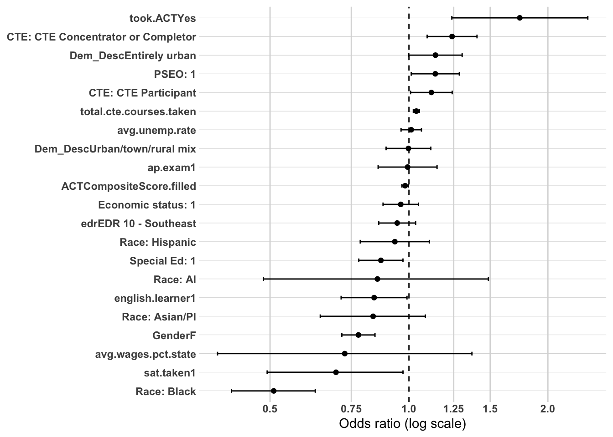

The primary purpose of this supplemental analysis is to examine workforce participation pathways among individuals who did not complete a postsecondary credential. Earlier sections focused on the full population and demonstrated that postsecondary attainment—particularly where and how a credential was earned—was the dominant mechanism associated with sustained regional employment.
This section shifts attention to the population for whom that mechanism does not operate.
Among non–postsecondary graduates, workforce participation pathways cannot be explained by credential depth, institutional sector, or graduation location. Instead, earlier descriptive and bivariate analyses identified high school career alignment (CTE), structural disadvantage, and local labor market context as central differentiators of workforce outcomes.
To strengthen confidence in those findings, a limited multivariate analysis is conducted using logistic regression. As in the full-population analysis, the goal is not causal inference or prediction, but confirmatory testing. Specifically, this modeling examines whether the strongest tree-based and bivariate relationships remain directionally consistent when key predictors are considered simultaneously.
Logistic regression is used here as a confirmatory tool rather than the primary analytic framework.
Methodology
Study Population
The analytic sample is restricted to individuals who did not complete a postsecondary credential. This restriction isolates workforce dynamics among high school graduates entering the labor market directly.
Outcome Variable
The primary model predicts:
Part 1: Sustained employment – region OR MN (binary outcome)
The dependent variable is coded as:
1 = Sustained WF – Southeast OR Sustained WF - MN
0 = All other workforce outcomes (includin, non-sustained employment, and no MN employment record)
Part 2: Sustained employment - region only
The depedent variable is coded as:
1 = Sustained WF - Southeast
0 = All other workforce outcomes (including Sustained WF - MN, non-sustained employment, and no MN employment record)
This specification maintains consistency with earlier modeling while isolating mechanisms specific to the non-college population.
Independent Variables
Because postsecondary mechanisms are not applicable in this subgroup, the model focuses on high school preparation, structural background, and local labor market context identified as important in earlier analyses.
Predictors include:
Demographic
Gender
RaceEthnicity
SpecialEdStatus
economic.status
english.learner
High school characteristics
Dem_Desc
edr
avg.wages.pct.state
avg.unemp.rate
High school accomplishments
cte.achievement
total.cte.courses.taken (if applicable)
pseo.participant
ap.exam
sat.taken
ACTCompositeScore_filled
took.ACT
Post-secondary
attended.ps
Variables are selected based on:
Strength of association in prior subgroup analyses
Conceptual plausibility within a non-college pathway
Policy relevance
Avoidance of redundancy
Postsecondary variables are excluded by design.
Analysis Approach
This multivariate analysis mirrors the structured confirmatory framework used in the full-population models but is adapted to the non-college subgroup.
Time-Based Modeling Strategy
Workforce attachment evolves over time. To capture this dynamic process, models will be estimated separately at:
1 year after high school
5 years after high school
10 years after high school
This staged approach allows examination of how mechanisms change across early, mid-term, and longer-term workforce trajectories.
Year 1: Immediate Labor Market Entry
The 1-year model captures early transition into the labor market. At this stage, high school preparation and career alignment are expected to exert the strongest influence. CTE exposure and intensity may function as immediate workforce anchors, while structural disadvantage may strongly shape early labor market attachment.
Year 5: Stabilization Phase
The 5-year model reflects early career consolidation. At this point, initial preparation effects may attenuate, and differences associated with labor market context and structural disadvantage may become more pronounced. This model evaluates whether early alignment persists or whether structural conditions increasingly shape outcomes.
Year 10: Long-Term Embeddedness
The 10-year model captures longer-term workforce integration. Earlier analyses suggest that local labor market conditions (e.g., wages and unemployment) may become more dominant over time. This specification tests whether contextual economic factors increasingly explain sustained regional employment among non-college graduates as individual preparation effects diminish.
Estimating separate models at each time point allows for:
Evaluation of coefficient stability over time
Assessment of attenuation or amplification of predictors
Identification of shifting mechanisms from individual preparation to structural context
Modeling Strategy
Within each time period, predictors are introduced in a structured sequence:
Model 1: Demographics
RaceEthnicity
economic.status
SpecialEdStatus
Gender
english.learner
Model 2: add High school characteristics
Dem_Desc
edr
avg.wages.pct.state
avg.unemp.rate
Model 3: add High school accomplishments
`High school accomplishments
cte.achievement
total.cte.courses.taken (if applicable)
pseo.participant
ap.exam
sat.taken
ACTCompositeScore_filled
took.ACT
Model 4: add post-secondary
Post-secondary
attended.ps
Evaluation Criteria
Results will be reported using:
Odds ratios
95% confidence intervals
Statistical significance levels
Directional interpretation
Model comparison metrics (AIC and pseudo R²) will be used to assess relative improvement across specifications, but emphasis will remain on coefficient magnitude and stability across time.
Interpretation Framework
Interpretation will focus on:
Whether CTE retains independent influence across time
Whether structural disadvantage grows or attenuates
Findings will be described as associations holding other included variables constant. No causal claims will be made.
Conceptual Focus
For non–postsecondary graduates, this time-structured modeling framework evaluates three evolving mechanisms:
Career alignment at labor market entry
Structural advantage or disadvantage shaping early stability
Local economic opportunity structures influencing long-term embeddedness
Together, these models clarify whether sustained regional employment among non-college graduates reflects early career alignment, structural inequality, changing economic context, or a combination of all three across time.
Part 1 - Prep data
The first thing I need to do is setup my dataset for modeling. I’m going to create the workforce participation into a binary and will use grad.year.5 as my modeling year.
As expected for a demographics-only baseline, model fit is minimal here — this is the starting reference point for tracking how these coefficients move as HS characteristics and accomplishments are added in later blocks.
Coefficient Interpretation
Gender and Race/Ethnicity
Female non-completers show significantly lower odds of sustained workforce participation at Year 1 (OR = 0.80, 95% CI 0.75–0.84) relative to male non-completers.
American Indian shows the largest gap (OR = 0.48, CI 0.33–0.68), followed by Black (OR = 0.65, CI 0.57–0.74), and Asian/Pacific Islander, significant but only barely (OR = 0.82, CI 0.69–0.97, p = 0.021).
Hispanic is not significant (OR = 0.96, CI 0.86–1.06, p = 0.417).
Economic Status, SpecialEdStatus, and English Learner
Economic status is not significant (OR = 1.05, CI 0.99–1.11, p = 0.104) at this baseline stage.
SpecialEdStatus shows a large, highly significant effect (OR = 0.63, CI 0.59–0.68) — the second-largest coefficient in the model after American Indian.
English learner is marginal, not significant at 0.05 (OR = 0.92, CI 0.84–1.01, p = 0.076).
Multicollinearity Check
All GVIF^(1/(2·Df)) values are low, with the highest being English learner at 1.20 and SpecialEdStatus at 1.09, both well under the ~2.0–2.5 concern threshold.
Substantive Pattern
At this Year 1 baseline, the clearest signals are SpecialEdStatus and the American Indian/Black race-ethnicity gaps, both already substantial before any HS-context or accomplishment variables are added. Economic status and English learner are both null-to-marginal here.
Likelihood ratio test: χ²(5) = 71.566, p < 0.001 — Model 2 is a statistically significant improvement over Model 1. AIC improved from 29,350.28 → 29,288.72.
Coefficient Interpretation
Carried from Model 1
Gender, RaceEthnicity, economic.status, and SpecialEdStatus are essentially unchanged in direction, magnitude, and significance from Model 1.
English learner strengthens from marginal (Model 1: OR = 0.92, p = 0.076) to significant (OR = 0.89, 95% CI 0.81–0.98, p = 0.013).
Hispanic remains not significant (OR = 0.96, CI 0.87–1.07, p = 0.487).
High School Characteristics
Dem_Desc: neither “Entirely urban” (OR = 1.06, CI 0.97–1.16, p = 0.225) nor “Urban/town/rural mix” (OR = 1.01, CI 0.94–1.09, p = 0.755) reach significance.
edrEDR 10 - Southeast is significant (OR = 0.93, CI 0.87–0.99, p = 0.018) — graduates from EDR 10 show modestly lower odds of sustained employment than EDR 9.
avg.unemp.rate is significant and negative (OR = 0.92, CI 0.90–0.94, p < 0.001) — higher local unemployment associated with lower odds of sustained employment, as expected.
avg.wages.pct.state is not significant (OR = 0.89, CI 0.59–1.34, p = 0.571).
Multicollinearity Check
All GVIF^(1/(2·Df)) values remain low, with the highest being English learner at 1.20 and avg.wages.pct.state at 1.18, both well under the ~2.0–2.5 concern threshold.
Substantive Pattern
The demographic coefficients from Model 1 are stable, with English learner now emerging as a modest, significant disadvantage — worth watching whether this holds, strengthens, or attenuates once HS accomplishments enter in Model 3. Of the new HS-characteristic variables, avg.unemp.rate is the clearest and strongest signal, consistent with local labor market context mattering for this non-completer population even at Year 1. edr and Dem_Desc show weak-to-null effects at this stage.
Likelihood ratio test: χ²(8) = 612.42, p < 0.001 — Model 3 is a large, statistically significant improvement over Model 2. AIC improved from 29,288.72 → 28,692.30.
Coefficient Interpretation
Carried from Model 2
GenderF attenuates slightly (Model 2: OR = 0.80 → Model 3: OR = 0.85, CI 0.80–0.90, p < 0.001) but remains significant and negative.
RaceEthnicityAI remains significant and negative (OR = 0.49, CI 0.34–0.71).
RaceEthnicityAsian/PI attenuates to non-significance (OR = 0.88, CI 0.73–1.04, p = 0.139), from significant in Models 1–2.
RaceEthnicityBlack remains stable and significant (OR = 0.64, CI 0.56–0.73).
RaceEthnicityHispanic remains non-significant (OR = 0.99, CI 0.88–1.10, p = 0.802).
economic.status remains non-significant (OR = 1.01, CI 0.95–1.07, p = 0.705).
SpecialEdStatus attenuates slightly (Model 2: OR = 0.63 → Model 3: OR = 0.61, CI 0.57–0.66) but remains large and significant.
english.learner strengthens further (Model 2: OR = 0.89, p = 0.013 → Model 3: OR = 0.85, CI 0.77–0.94, p = 0.001).
Dem_DescEntirely urban flips into significance (OR = 1.16, CI 1.06–1.28, p = 0.001), from non-significant in Model 2.
edrEDR 10 - Southeast weakens to marginal (Model 2: OR = 0.93, p = 0.018 → Model 3: OR = 0.94, CI 0.88–1.01, p = 0.072).
avg.unemp.rate attenuates but remains significant (Model 2: OR = 0.92 → Model 3: OR = 0.97, CI 0.94–0.99, p = 0.004).
avg.wages.pct.state remains non-significant, though it flips direction (Model 2: OR = 0.89 → Model 3: OR = 1.25, CI 0.82–1.92, p = 0.301).
New: High School Accomplishments
pseo.participant is marginal, not significant at 0.05 (OR = 1.08, CI 0.99–1.17, p = 0.085).
took.ACTYes shows a very large, highly significant positive effect (OR = 3.67, CI 3.02–4.47, p < 0.001).
ACTCompositeScore.filled is significant and negative (OR = 0.94 per point, CI 0.93–0.95, p < 0.001) — the familiar “two forces” pattern of participation vs. score pulling opposite directions.
ap.exam is significant and negative (OR = 0.78, CI 0.69–0.87, p < 0.001).
sat.taken is significant and negative (OR = 0.61, CI 0.41–0.87, p = 0.008).
cte.achievementCTE Concentrator or Completor (OR = 1.40, CI 1.28–1.54, p < 0.001) and cte.achievementCTE Participant (OR = 1.20, CI 1.11–1.30, p < 0.001) are both significant and positive, with a clear dose-response pattern.
total.cte.courses.taken is significant and positive (OR = 1.03 per course, CI 1.02–1.04, p < 0.001).
Multicollinearity Check
took.ACT (GVIF^(1/(2·Df)) = 3.52) and ACTCompositeScore.filled (3.67) are both elevated — expected and structural, given ACTCompositeScore.filled is coded 0 for non-test-takers by design. All other variables remain well under the ~2.0–2.5 concern threshold, including cte.achievement (1.17) and total.cte.courses.taken (1.37).
Substantive Pattern
The HS-accomplishments block produces the largest jump in model fit so far, driven primarily by took.ACT and the CTE variables. The academic-orientation pattern already familiar from the DV1–DV5 work shows up again here: taking the ACT is strongly positive, but higher scores among test-takers, AP exam participation, and SAT-taking are all negative — the same “two forces” dynamic, now confirmed in the non-completer population as well. CTE engagement (both achievement level and course count) is a consistent positive predictor, mirroring its role in DV1/DV2/DV4. RaceEthnicityAsian/PI’s attenuation to null once accomplishments enter is worth noting as a new pattern at this stage. english.learner continues to strengthen rather than attenuate — now the third consecutive block where this has moved in the same direction — which is the opposite of what would be expected if HS accomplishments were “explaining away” the EL disadvantage, and worth flagging clearly rather than assuming attenuation.
Likelihood ratio test: χ²(1) = 738.90, p < 0.001 — adding attended.ps is a large, statistically significant improvement over Model 3. AIC improved from 28,692.30 → 27,955.40.
Coefficient Interpretation
Carried from Model 3
GenderF remains stable and significant (OR = 0.80, CI 0.76–0.85, p < 0.001).
RaceEthnicityAI remains significant and negative (OR = 0.50, CI 0.34–0.72).
RaceEthnicityAsian/PI remains non-significant (OR = 0.86, CI 0.72–1.04, p = 0.115).
RaceEthnicityBlack strengthens slightly (Model 3: OR = 0.64 → Model 4: OR = 0.58, CI 0.51–0.67, p < 0.001) — gap widens rather than narrows once attended.ps enters.
RaceEthnicityHispanic remains non-significant (OR = 0.96, CI 0.86–1.07, p = 0.476).
economic.status remains non-significant (OR = 1.01, CI 0.95–1.08, p = 0.668).
SpecialEdStatus attenuates (Model 3: OR = 0.61 → Model 4: OR = 0.65, CI 0.60–0.70, p < 0.001) but remains large and significant.
english.learner remains significant and negative (OR = 0.87, CI 0.79–0.95, p = 0.004) — holding steady rather than attenuating, consistent with the pattern across all prior blocks.
Dem_DescEntirely urban attenuates to marginal (Model 3: OR = 1.16, p = 0.001 → Model 4: OR = 1.09, CI 1.00–1.20, p = 0.063).
edrEDR 10 - Southeast strengthens back into clear significance (Model 3: OR = 0.94, p = 0.072 → Model 4: OR = 0.91, CI 0.85–0.97, p = 0.005).
avg.unemp.rate strengthens (Model 3: OR = 0.97 → Model 4: OR = 0.92, CI 0.89–0.94, p < 0.001).
avg.wages.pct.state remains non-significant (OR = 1.04, CI 0.67–1.60, p = 0.874).
pseo.participant is marginal (OR = 1.09, CI 1.00–1.19, p = 0.054), similar to Model 3.
took.ACTYes remains large and significant (OR = 3.61, CI 2.96–4.41, p < 0.001), essentially stable from Model 3.
ACTCompositeScore.filled remains significant and negative (OR = 0.94 per point, CI 0.93–0.95, p < 0.001).
ap.exam remains significant and negative (OR = 0.75, CI 0.66–0.84, p < 0.001).
sat.taken remains significant and negative (OR = 0.64, CI 0.43–0.92, p = 0.020).
cte.achievement categories both attenuate slightly but remain significant: Concentrator/Completor (OR = 1.34, CI 1.22–1.47, p < 0.001), Participant (OR = 1.14, CI 1.05–1.24, p = 0.001).
total.cte.courses.taken remains stable and significant (OR = 1.03 per course, CI 1.02–1.04, p < 0.001).
New: Postsecondary Attendance
attended.psYes shows a large, highly significant positive effect (OR = 2.36, CI 2.22–2.51, p < 0.001) — even without completing a credential, having attended postsecondary education is associated with more than double the odds of sustained employment at Year 1 relative to non-attenders.
Multicollinearity Check
took.ACT (3.54) and ACTCompositeScore.filled (3.68) remain elevated for the expected structural reason. attended.ps shows a low GVIF^(1/(2·Df)) (1.04) — no collinearity concern with its inclusion. All other variables remain within acceptable range.
Substantive Pattern
This is the final model in the Year 1/Part 1 sequence. attended.ps produces a large, independent positive effect even in a population that, by definition, never completed a credential — suggesting that exposure to postsecondary education itself carries labor market value distinct from completion. RaceEthnicityBlack’s gap widening once attended.ps enters (rather than narrowing) is a notable departure from the more typical attenuation pattern, and worth comparing against how this variable behaves in Part 2 and at later time points. english.learner has now held a stable, significant negative association across all four model blocks without attenuating — the clearest case in this sequence of a demographic disadvantage that accomplishment and postsecondary-attendance variables do not explain away.
As expected for a demographics-only baseline, model fit is minimal here — this is the starting reference point for tracking how these coefficients move as HS characteristics and accomplishments are added in later blocks, and for comparing against the Year 1/Part 1 sequence.
Coefficient Interpretation
Gender and Race/Ethnicity
Female non-completers show significantly lower odds of sustained workforce participation at Year 5 (OR = 0.83, 95% CI 0.79–0.87) relative to male non-completers — similar in direction and magnitude to Year 1 (OR = 0.80).
American Indian shows the largest gap (OR = 0.46, CI 0.33–0.65), followed by Black (OR = 0.51, CI 0.45–0.57) — notably larger than the Year 1 Black gap (OR = 0.65) — and Asian/Pacific Islander (OR = 0.78, CI 0.67–0.92, p = 0.002).
Hispanic remains not significant (OR = 0.95, CI 0.86–1.05, p = 0.292), consistent with Year 1.
Economic Status, SpecialEdStatus, and English Learner
Economic status is not significant (OR = 0.96, CI 0.91–1.01, p = 0.151) — similar to Year 1.
SpecialEdStatus shows a large, highly significant effect (OR = 0.71, CI 0.66–0.76) — somewhat attenuated in magnitude compared to Year 1 (OR = 0.63), though still one of the largest coefficients in the model.
English learner is significant here (OR = 0.84, CI 0.77–0.92, p < 0.001) — already significant at the demographics-only baseline, unlike Year 1 where it was only marginal (p = 0.076) at this stage.
Multicollinearity Check
All GVIF^(1/(2·Df)) values are low, with the highest being English learner at 1.19 and RaceEthnicity at 1.04, both well under the ~2.0–2.5 concern threshold.
Substantive Pattern
At this Year 5 baseline, the race/ethnicity gradient (especially the widening Black-White gap relative to Year 1) and SpecialEdStatus remain the clearest signals, consistent with the Year 1 pattern. The most notable difference from Year 1 is english.learner: here it’s significant right from the demographics-only baseline, whereas at Year 1 it only reached significance once HS characteristics and accomplishments were added. This is worth tracking closely — if english.learner’s disadvantage is already present at Year 5’s baseline and doesn’t move much as later blocks are added, it would reinforce the “access pattern” story emerging from Year 1’s Model 4, where EL held stable across all blocks without attenuating.
Likelihood ratio test: χ²(5) = 38.495, p < 0.001 — Model 2 is a statistically significant improvement over Model 1. AIC improved from 34,803.10 → 34,774.60.
Coefficient Interpretation
Carried from Model 1
Gender, RaceEthnicity, economic.status, SpecialEdStatus, and english.learner are essentially unchanged in direction, magnitude, and significance from Model 1.
High School Characteristics
Dem_DescEntirely urban is significant (OR = 1.10, CI 1.02–1.19, p = 0.018).
Dem_DescUrban/town/rural mix is not significant (OR = 0.96, CI 0.90–1.03, p = 0.261).
edrEDR 10 - Southeast is not significant (OR = 0.95, CI 0.90–1.01, p = 0.114) — notably different from Year 1, where this variable was significant at this same stage (OR = 0.93, p = 0.018).
avg.unemp.rate is significant here, but positive (OR = 1.03, CI 1.01–1.05, p = 0.001) — direction opposite to Year 1, where higher unemployment predicted lower odds of sustained employment (OR = 0.92).
avg.wages.pct.state is significant and negative (OR = 0.47, CI 0.32–0.69, p < 0.001) — a large effect, and also notably different from Year 1, where this variable was not significant at this stage.
Multicollinearity Check
All GVIF^(1/(2·Df)) values remain low, with the highest being English learner at 1.20 and avg.wages.pct.state at 1.17, both well under the ~2.0–2.5 concern threshold.
Substantive Pattern
The demographic coefficients remain stable from Model 1. The HS-characteristics block looks meaningfully different here than at Year 1: avg.unemp.rate flips sign (negative at Year 1, positive at Year 5), and avg.wages.pct.state moves from non-significant to a large, significant negative effect. edr also loses the significance it had at Year 1. Worth flagging clearly — the local labor-market variables are behaving quite differently at Year 5 than at Year 1, which is broadly consistent with the methodology’s expectation that context effects may shift over time, though the specific sign flip on unemployment rate is worth double-checking rather than assuming it’s simply “context becoming more important.”
Likelihood ratio test: χ²(8) = 450.83, p < 0.001 — Model 3 is a large, statistically significant improvement over Model 2. AIC improved from 34,774.60 → 34,339.77.
Coefficient Interpretation
Carried from Model 2
GenderF attenuates (Model 2: OR = 0.83 → Model 3: OR = 0.87, CI 0.82–0.91, p < 0.001) but remains significant and negative.
RaceEthnicityAI remains significant and negative (OR = 0.50, CI 0.35–0.70).
RaceEthnicityAsian/PI attenuates to marginal (Model 2: OR = 0.80, p = 0.005 → Model 3: OR = 0.87, CI 0.74–1.02, p = 0.088).
RaceEthnicityBlack remains large and significant (OR = 0.53, CI 0.47–0.60) — essentially stable from Model 2, and still notably wider than the equivalent Year 1 Model 3 gap (OR = 0.64).
RaceEthnicityHispanic remains non-significant (OR = 0.98, CI 0.88–1.08, p = 0.656).
economic.status weakens to marginal (Model 2: OR = 0.96, p = 0.125 → Model 3: OR = 0.95, CI 0.90–1.01, p = 0.090).
SpecialEdStatus attenuates (Model 2: OR = 0.71 → Model 3: OR = 0.73, CI 0.68–0.78) but remains large and significant.
english.learner remains significant and negative (OR = 0.83, CI 0.76–0.91, p < 0.001) — holding steady rather than attenuating, consistent with the Year 1 pattern.
Dem_DescEntirely urban strengthens (Model 2: OR = 1.10 → Model 3: OR = 1.19, CI 1.09–1.29, p < 0.001).
edrEDR 10 - Southeast remains non-significant (OR = 0.99, CI 0.93–1.05, p = 0.655).
avg.unemp.rate strengthens further and remains positive (Model 2: OR = 1.03 → Model 3: OR = 1.07, CI 1.05–1.10, p < 0.001) — this sign (opposite of Year 1) persists once accomplishments are added.
avg.wages.pct.state attenuates somewhat but remains significant and negative (Model 2: OR = 0.47 → Model 3: OR = 0.60, CI 0.41–0.88, p = 0.009).
New: High School Accomplishments
pseo.participant is significant and positive (OR = 1.13, CI 1.05–1.21, p = 0.001).
took.ACTYes is significant and positive (OR = 2.20, CI 1.85–2.63, p < 0.001) — notably smaller than the Year 1 equivalent (OR = 3.67).
ACTCompositeScore.filled is significant and negative (OR = 0.97 per point, CI 0.96–0.98, p < 0.001) — smaller magnitude than Year 1 (OR = 0.94), but same “two forces” direction.
ap.exam is not significant here (OR = 0.95, CI 0.86–1.04, p = 0.254) — different from Year 1, where this was significant and negative.
sat.taken remains significant and negative (OR = 0.61, CI 0.47–0.79, p < 0.001).
cte.achievement categories both remain significant and positive: Concentrator/Completor (OR = 1.31, CI 1.21–1.43, p < 0.001), Participant (OR = 1.23, CI 1.15–1.32, p < 0.001).
total.cte.courses.taken remains significant and positive (OR = 1.04 per course, CI 1.02–1.05, p < 0.001).
Multicollinearity Check
took.ACT (3.53) and ACTCompositeScore.filled (3.73) remain elevated for the expected structural reason. All other variables remain within acceptable range.
Substantive Pattern
The HS-accomplishments block again produces the largest fit improvement, though somewhat smaller in magnitude than at Year 1. The “two forces” ACT pattern persists but is notably weaker at Year 5 than Year 1 (took.ACT OR drops from 3.67 to 2.20), which may indicate the immediate labor-market boost from having taken the ACT fades somewhat over time. ap.exam losing significance here (having been significant and negative at Year 1) is a new pattern worth tracking into Model 4. avg.unemp.rate’s positive sign continues to hold even with accomplishments controlled — this is looking more like a stable feature of the Year 5 model than a transient artifact, though it remains a counterintuitive direction worth a specification check before being reported as a finding. english.learner continues its now three-block streak of stable, unattenuated disadvantage, mirroring the Year 1 pattern almost exactly.
Likelihood ratio test: χ²(1) = 172.61, p < 0.001 — adding attended.ps is a statistically significant improvement over Model 3. AIC improved from 34,339.77 → 34,169.16.
Coefficient Interpretation
Carried from Model 3
GenderF remains stable and significant (OR = 0.85, CI 0.81–0.90, p < 0.001).
RaceEthnicityAI remains significant and negative (OR = 0.51, CI 0.36–0.72).
RaceEthnicityAsian/PI remains marginal (OR = 0.87, CI 0.74–1.02, p = 0.085).
RaceEthnicityBlack strengthens slightly (Model 3: OR = 0.53 → Model 4: OR = 0.50, CI 0.44–0.57, p < 0.001) — gap widens once attended.ps enters, mirroring the same pattern seen at Year 1/Model 4.
RaceEthnicityHispanic remains non-significant (OR = 0.97, CI 0.87–1.07, p = 0.504).
economic.status remains non-significant (OR = 0.96, CI 0.91–1.02, p = 0.196).
SpecialEdStatus attenuates (Model 3: OR = 0.73 → Model 4: OR = 0.75, CI 0.70–0.81, p < 0.001) but remains large and significant.
english.learner remains significant and negative (OR = 0.84, CI 0.77–0.92, p < 0.001) — holding steady across all four blocks, as it did at Year 1.
Dem_DescEntirely urban remains significant (OR = 1.16, CI 1.07–1.26, p < 0.001).
edrEDR 10 - Southeast remains non-significant (OR = 0.98, CI 0.92–1.04, p = 0.474).
avg.unemp.rate remains significant and positive (Model 3: OR = 1.07 → Model 4: OR = 1.05, CI 1.03–1.08, p < 0.001) — sign persists through the final model.
avg.wages.pct.state remains significant and negative (Model 3: OR = 0.60 → Model 4: OR = 0.55, CI 0.38–0.82, p = 0.003).
pseo.participant remains significant and positive (OR = 1.12, CI 1.04–1.21, p = 0.002).
took.ACTYes remains significant and positive (OR = 2.12, CI 1.78–2.53, p < 0.001), essentially stable from Model 3.
ACTCompositeScore.filled remains significant and negative (OR = 0.97 per point, CI 0.96–0.97, p < 0.001).
ap.exam remains non-significant (OR = 0.93, CI 0.85–1.03, p = 0.154), consistent with Model 3.
sat.taken remains significant and negative (OR = 0.63, CI 0.48–0.82, p = 0.001).
cte.achievement categories both attenuate slightly but remain significant: Concentrator/Completor (OR = 1.28, CI 1.18–1.39, p < 0.001), Participant (OR = 1.21, CI 1.12–1.29, p < 0.001).
total.cte.courses.taken remains stable and significant (OR = 1.04 per course, CI 1.03–1.05, p < 0.001).
New: Postsecondary Attendance
attended.psYes is significant and positive (OR = 1.43, CI 1.36–1.51, p < 0.001) — notably smaller than the Year 1 equivalent (OR = 2.36), suggesting the labor-market boost from having attended postsecondary education (without completing) fades somewhat by Year 5.
Multicollinearity Check
took.ACT (3.53) and ACTCompositeScore.filled (3.74) remain elevated for the expected structural reason. attended.ps shows a low GVIF^(1/(2·Df)) (1.06) — no collinearity concern. All other variables remain within acceptable range.
Substantive Pattern
This is the final model in the Year 5/Part 1 sequence. attended.ps remains a significant, independent positive predictor, but its effect size has roughly halved relative to Year 1 (OR 2.36 → 1.43) — the same fading pattern already noted for took.ACT across Years 1 and 5, suggesting individual preparation/attendance effects broadly diminish in relative importance as time since graduation increases. RaceEthnicityBlack’s gap again widens once attended.ps enters, replicating the Year 1/Model 4 pattern exactly — this is now a two-for-two replication and worth treating as a genuine, stable feature of this population rather than a one-off. english.learner has now held a stable, significant negative association across all four blocks at both Year 1 and Year 5 — the clearest, most consistently replicated “unexplained disadvantage” finding in this non-completer analysis so far. avg.unemp.rate’s positive sign has now persisted through every block at Year 5, in contrast to its negative sign throughout Year 1 — this is looking like a genuine timepoint-specific pattern rather than noise, though still worth flagging for a specification check given how directly it contradicts the Year 1 finding.
As expected for a demographics-only baseline, model fit is minimal here — this is the starting reference point for tracking how these coefficients move as HS characteristics and accomplishments are added in later blocks, and for comparing against the Year 1 and Year 5 sequences.
Coefficient Interpretation
Gender and Race/Ethnicity
Female non-completers show significantly lower odds of sustained workforce participation at Year 10 (OR = 0.74, 95% CI 0.68–0.80) relative to male non-completers — the largest gender gap of the three time points so far (Year 1: OR = 0.80; Year 5: OR = 0.83).
RaceEthnicityAI is not significant here (OR = 0.79, CI 0.45–1.37, p = 0.413) — a notable departure from both Year 1 (OR = 0.48) and Year 5 (OR = 0.46), where this was one of the largest, most significant gaps. Worth flagging given the much smaller sample size at Year 10 (n = 10,091 vs. 22,663/25,484), which likely widens this CI substantially.
RaceEthnicityAsian/PI is significant (OR = 0.76, CI 0.58–0.98, p = 0.035), similar in magnitude to Year 1 and Year 5.
RaceEthnicityBlack remains large and significant (OR = 0.51, CI 0.41–0.62) — consistent with the substantial, stable gap seen at both Year 1 (OR = 0.65) and Year 5 (OR = 0.51), and notably now matching Year 5’s magnitude almost exactly at this baseline stage.
RaceEthnicityHispanic remains not significant (OR = 0.88, CI 0.75–1.05, p = 0.159), consistent with both prior time points.
Economic Status, SpecialEdStatus, and English Learner
Economic status is not significant (OR = 0.96, CI 0.88–1.04, p = 0.331), consistent with Year 1 and Year 5.
SpecialEdStatus is significant (OR = 0.83, CI 0.75–0.92, p < 0.001) — notably smaller in magnitude here than at either Year 1 (OR = 0.63) or Year 5 (OR = 0.71), continuing what looks like a trend of this effect shrinking over time even at the demographics-only baseline.
English learner is marginal, not significant at 0.05 (OR = 0.86, CI 0.73–1.01, p = 0.060) — different from Year 5, where this was already significant at this same baseline stage (p < 0.001), though similar to Year 1’s marginal result at this stage (p = 0.076).
Multicollinearity Check
All GVIF^(1/(2·Df)) values are low, with the highest being English learner at 1.14 and RaceEthnicity at 1.04, both well under the ~2.0–2.5 concern threshold.
Substantive Pattern
At this Year 10 baseline, RaceEthnicityBlack and Gender remain the clearest, most stable signals across all three time points. RaceEthnicityAI losing significance here is worth watching closely as later blocks are added — it could reflect a genuine narrowing of this gap over time, or simply reduced power from the smaller Year 10 sample; this distinction matters and shouldn’t be assumed either way without checking cell sizes. SpecialEdStatus continuing to shrink in magnitude across Year 1 → Year 5 → Year 10 (even at this early, unadjusted stage) is a pattern worth tracking through Model 4 — if it continues, it would suggest this disadvantage is concentrated in early labor market entry rather than persisting into longer-term attachment.
Likelihood ratio test: χ²(5) = 8.194, p = 0.146 — Model 2 is NOT a statistically significant improvement over Model 1. AIC actually increased slightly (13,840.50 → 13,842.31). This is the first HS-characteristics block across all three time points that failed to reach significance as a set.
Coefficient Interpretation
Carried from Model 1
Gender, RaceEthnicityAsian/PI, RaceEthnicityBlack, economic.status, and SpecialEdStatus are essentially unchanged in direction, magnitude, and significance from Model 1.
RaceEthnicityAI remains non-significant (OR = 0.80, CI 0.46–1.39, p = 0.437), consistent with Model 1.
RaceEthnicityHispanic remains non-significant (OR = 0.89, CI 0.75–1.06, p = 0.191).
english.learner strengthens from marginal (Model 1: p = 0.060) to significant (OR = 0.85, CI 0.72–1.00, p = 0.046) — though the CI upper bound sits almost exactly at 1.0.
High School Characteristics
Dem_DescEntirely urban is not significant (OR = 1.10, CI 0.96–1.25, p = 0.157).
Dem_DescUrban/town/rural mix is not significant (OR = 1.00, CI 0.90–1.12, p = 0.941).
edrEDR 10 - Southeast is marginal, not significant at 0.05 (OR = 0.91, CI 0.83–1.00, p = 0.052).
avg.unemp.rate is not significant (OR = 1.01, CI 0.96–1.06, p = 0.771) — different from both Year 1 (significant, negative) and Year 5 (significant, positive), where this reached significance at this same stage.
avg.wages.pct.state is not significant (OR = 0.83, CI 0.44–1.54, p = 0.550) — also different from Year 5, where this was significant and large at this stage.
Multicollinearity Check
All GVIF^(1/(2·Df)) values remain low, with the highest being Dem_Desc at 1.14 and avg.unemp.rate at 1.22, both well under the ~2.0–2.5 concern threshold.
Substantive Pattern
This is the first HS-characteristics block across the three time points where none of the individual new variables, nor the block as a whole, reach clear significance. This is a genuinely different pattern from both Year 1 (where avg.unemp.rate and edr were significant) and Year 5 (where avg.unemp.rate, avg.wages.pct.state, and Dem_Desc were all significant, with avg.unemp.rate notably flipping sign from Year 1). Worth being cautious here: this null result could reflect a real attenuation of HS-characteristic effects on longer-term outcomes, or it could reflect reduced statistical power from the much smaller Year 10 sample (n = 10,091 vs. 22,663–25,484 at the earlier time points). I’d hold off attributing this to “context mattering less over time” until HS accomplishments and attended.ps are added, since the demographic core of the model remains essentially unchanged from Model 1.
Likelihood ratio test: χ²(8) = 116.872, p < 0.001 — Model 3 is a statistically significant improvement over Model 2, despite Model 2 itself not improving on Model 1. AIC improved from 13,842.31 → 13,741.44.
Coefficient Interpretation
Carried from Model 2
GenderF remains stable and significant (OR = 0.78, CI 0.72–0.84, p < 0.001).
RaceEthnicityAI remains non-significant (OR = 0.85, CI 0.48–1.49, p = 0.581), consistent with Models 1–2 and the small Year 10 cell size (n = 52) already discussed.
RaceEthnicityAsian/PI attenuates to non-significance (Model 2: OR = 0.76, p = 0.038 → Model 3: OR = 0.84, CI 0.64–1.09, p = 0.181).
RaceEthnicityBlack remains large and significant (OR = 0.51, CI 0.41–0.63) — essentially unchanged across all three models, and continuing to hold steady despite the modest Year 10 cell size (n = 508).
RaceEthnicityHispanic remains non-significant (OR = 0.93, CI 0.78–1.11, p = 0.423).
economic.status remains non-significant (OR = 0.96, CI 0.88–1.05, p = 0.363).
SpecialEdStatus attenuates further (Model 2: OR = 0.83 → Model 3: OR = 0.87, CI 0.78–0.97, p = 0.013) — continuing the trend of this coefficient shrinking in magnitude across Year 1 → Year 5 → Year 10.
english.learner remains significant and negative (OR = 0.84, CI 0.71–0.99, p = 0.038) — holding steady, consistent with the stable pattern seen at Year 1 and Year 5.
Dem_DescEntirely urban is marginal, not significant at 0.05 (OR = 1.14, CI 1.00–1.30, p = 0.052).
edrEDR 10 - Southeast remains non-significant (OR = 0.94, CI 0.86–1.03, p = 0.210).
avg.unemp.rate remains non-significant (OR = 1.01, CI 0.96–1.06, p = 0.660).
avg.wages.pct.state remains non-significant (OR = 0.73, CI 0.38–1.37, p = 0.323).
New: High School Accomplishments
pseo.participant is significant and positive (OR = 1.14, CI 1.01–1.29, p = 0.032).
took.ACTYes is significant and positive (OR = 1.74, CI 1.24–2.44, p = 0.001) — continuing the pattern of this effect shrinking across time points (Year 1: OR = 3.67; Year 5: OR = 2.20; Year 10: OR = 1.74).
ACTCompositeScore.filled is significant and negative (OR = 0.98 per point, CI 0.97–1.00, p = 0.021) — smallest magnitude of the three time points, consistent with the “two forces” effect weakening over time.
ap.exam is not significant (OR = 0.99, CI 0.86–1.15, p = 0.928) — consistent with the Year 5 pattern (non-significant), a departure from Year 1 (significant, negative).
sat.taken remains significant and negative (OR = 0.69, CI 0.49–0.97, p = 0.035).
cte.achievementCTE Concentrator or Completor (OR = 1.24, CI 1.09–1.40, p = 0.001) and cte.achievementCTE Participant (OR = 1.12, CI 1.01–1.24, p = 0.035) both remain significant and positive.
total.cte.courses.taken remains significant and positive (OR = 1.04 per course, CI 1.02–1.05, p < 0.001) — consistent in magnitude with Year 5.
Multicollinearity Check
took.ACT (4.20) and ACTCompositeScore.filled (4.44) are notably more elevated here than at Year 1 (3.53/3.73) or Year 5 (3.53/3.74) — still attributable to the same structural relationship, but the highest VIF values seen for this pair across all three time points, likely reflecting the smaller Year 10 sample. All other variables remain within acceptable range.
Substantive Pattern
The HS-accomplishments block recovers a clear, significant fit improvement despite Model 2 showing none — reinforcing that the earlier null HS-characteristics result likely reflects those specific variables genuinely not mattering by Year 10, rather than a general loss of power in this smaller sample (since accomplishment variables here are clearly still detectable). The “two forces” ACT pattern (participation positive, score negative) continues its now-consistent three-point weakening trend across Year 1 → 5 → 10, both for took.ACT and ACTCompositeScore.filled — this looks like a genuine, replicated finding that individual academic-preparation effects fade in relative importance as time since graduation increases, exactly as the methodology anticipated. SpecialEdStatus also continues its shrinking trend across all three time points at this stage. RaceEthnicityAsian/PI’s attenuation to non-significance here, following its significance in Model 2, adds a third data point to a somewhat inconsistent pattern for this group across blocks and time points, likely reflecting its smaller cell size (n = 259) rather than a stable substantive finding.
Likelihood ratio test: χ²(1) = 32.365, p < 0.001 — adding attended.ps is a statistically significant improvement over Model 3. AIC improved from 13,741.44 → 13,711.07.
Coefficient Interpretation
Carried from Model 3
GenderF remains stable and significant (OR = 0.77, CI 0.71–0.84, p < 0.001).
RaceEthnicityAI remains non-significant (OR = 0.87, CI 0.49–1.51, p = 0.617), consistent throughout given the small Year 10 cell size (n = 52).
RaceEthnicityAsian/PI remains non-significant (OR = 0.84, CI 0.65–1.09, p = 0.195).
RaceEthnicityBlack remains large and significant, and strengthens slightly (Model 3: OR = 0.51 → Model 4: OR = 0.49, CI 0.40–0.61, p < 0.001) — gap widens once attended.ps enters, replicating the pattern seen at both Year 1 and Year 5 Model 4.
RaceEthnicityHispanic remains non-significant (OR = 0.93, CI 0.78–1.10, p = 0.408).
economic.status remains non-significant (OR = 0.96, CI 0.88–1.05, p = 0.375).
SpecialEdStatus attenuates further to marginal significance (Model 3: OR = 0.87, p = 0.013 → Model 4: OR = 0.89, CI 0.80–0.99, p = 0.039) — continuing its shrinking trend across all three time points and now the weakest of the three at this final model stage.
english.learner weakens to marginal (Model 3: OR = 0.84, p = 0.038 → Model 4: OR = 0.85, CI 0.72–1.00, p = 0.057) — the first time across all three time points that english.learner has slipped below significance at the final model stage, a departure from its consistently stable, significant pattern at Year 1 and Year 5.
Dem_DescEntirely urban remains non-significant (OR = 1.12, CI 0.98–1.28, p = 0.103).
edrEDR 10 - Southeast remains non-significant (OR = 0.93, CI 0.85–1.02, p = 0.123).
avg.unemp.rate remains non-significant (OR = 1.01, CI 0.96–1.06, p = 0.844).
avg.wages.pct.state remains non-significant (OR = 0.69, CI 0.37–1.30, p = 0.252).
pseo.participant remains significant and positive (OR = 1.14, CI 1.01–1.29, p = 0.033).
took.ACTYes remains significant and positive but continues weakening (Model 3: OR = 1.74 → Model 4: OR = 1.56, CI 1.11–2.19, p = 0.011) — now the smallest of the three time points at this final model stage (Year 1: OR = 3.61; Year 5: OR = 2.12; Year 10: OR = 1.56).
ACTCompositeScore.filled remains significant and negative (OR = 0.98 per point, CI 0.97–1.00, p = 0.035).
ap.exam remains non-significant (OR = 1.00, CI 0.86–1.15, p = 0.949).
sat.taken remains significant and negative (OR = 0.70, CI 0.50–0.98, p = 0.041).
cte.achievementCTE Concentrator or Completor remains significant (OR = 1.22, CI 1.08–1.38, p = 0.002); cte.achievementCTE Participant weakens to marginal (Model 3: OR = 1.12, p = 0.035 → Model 4: OR = 1.10, CI 0.99–1.22, p = 0.069).
total.cte.courses.taken remains stable and significant (OR = 1.04 per course, CI 1.02–1.05, p < 0.001).
New: Postsecondary Attendance
attended.psYes is significant and positive (OR = 1.28, CI 1.18–1.40, p < 0.001) — continuing the fading trend across time points (Year 1: OR = 2.36; Year 5: OR = 1.43; Year 10: OR = 1.28), the smallest effect of the three.
Multicollinearity Check
took.ACT (4.22) and ACTCompositeScore.filled (4.44) remain the most elevated of any time point, consistent with Model 3. attended.ps shows a low GVIF^(1/(2·Df)) (1.08) — no collinearity concern. All other variables remain within acceptable range.
Substantive Pattern
This is the final model in the Year 10/Part 1 sequence. attended.ps continues its clear, monotonic weakening across time points, now joining took.ACT and ACTCompositeScore.filled as a third variable showing this same “fading preparation/attendance effect” pattern — together these form a consistent, replicated story that individual-level preparation and postsecondary exposure matter most for immediate labor-market entry and steadily less for longer-term attachment. RaceEthnicityBlack’s gap widening once attended.ps enters replicates cleanly for a third consecutive time point — this is now a fully consistent finding across Year 1, Year 5, and Year 10. english.learner slipping to marginal significance here, after being stable and significant at every stage in both Year 1 and Year 5, is a genuine break in an otherwise very consistent pattern — worth flagging clearly rather than treating as a continuation of the “stable disadvantage” story, though the smaller Year 10 sample makes it hard to be fully confident this represents a true attenuation rather than reduced power.
or_plot <-tidy(model3, conf.int =TRUE, exponentiate =TRUE) %>%filter(term !="(Intercept)") %>%mutate(# Make labels nicer (edit these replacements to match your exact factor labels)term =str_replace_all(term, c("RaceEthnicity"="Race: ","economic.status"="Economic status: ","SpecialEdStatus"="Special Ed: ","pseo.participant"="PSEO: ","cte.achievement"="CTE: ","MCA.M"="MCA Math" )),# Put most important effects near the top (optional: tweak ordering later)term =fct_reorder(term, estimate) )ggplot(or_plot, aes(x = estimate, y = term)) +geom_vline(xintercept =1, linetype ="dashed") +geom_vline(xintercept =c(0.5, 0.75, 1.25, 1.5, 2),color ="grey85") +geom_point() +geom_errorbar(aes(xmin = conf.low, xmax = conf.high),orientation ="y",width =0.2 ) +scale_x_log10(breaks =c(0.5, 0.75, 1, 1.25, 1.5, 2),labels =c("0.5", "0.75", "1.0", "1.25", "1.5", "2.0") ) + theme_line +labs(x ="Odds ratio (log scale)",y =NULL )

Full Synthesis: Non-Completer Multivariate Confirmation Analysis — Sustained Workforce Participation (Region OR MN), Part 1Year 1, Year 5, and Year 10
Overview
Across all three time points, model fit follows a clear downward trajectory: final pseudo-R² falls from 0.0591 (Year 1) to 0.0316 (Year 5) to 0.0216 (Year 10), and the incremental contribution of both the HS-accomplishments block and attended.ps shrinks at every step (accomplishments LRT deviance: 612.42 → 450.83 → 116.87; attended.ps LRT deviance: 738.90 → 172.61 → 32.37). The HS-characteristics block itself follows the same trajectory to its logical endpoint: significant at Year 1 (χ²(5) = 71.57, p < 0.001) and Year 5 (χ²(5) = 38.50, p < 0.001), but not significant at all at Year 10 (χ²(5) = 8.19, p = 0.146) — the first non-significant block anywhere in this project. The clearest overall story this analysis tells is that high-school-era characteristics and accomplishments predict sustained workforce participation best immediately after leaving school, and matter progressively less the further out you measure — with one major exception, discussed below, that doesn’t follow this pattern at all.
The one true constant: the Black-White gap
Across all twelve models spanning three time points, the Black coefficient never attenuates and, at every single time point, widens further once attended.ps enters the model (Year 1: OR 0.639 → 0.583; Year 5: OR 0.530 → 0.501; Year 10: OR 0.509 → 0.494). It is the largest or second-largest demographic disparity at every time point and every model stage, holding up even at Year 10 despite a much smaller overall sample (n = 10,091) and a modest cell size for this group specifically (n = 508). This is now the second population and outcome combination in this body of work — following DV1, DV2, and DV5 in the original completer-focused project — where this exact non-attenuating, widening-not-narrowing pattern appears. This should be presented as a central, cross-cutting finding rather than a population-specific curiosity.
Demographic trajectories: several genuinely different shapes over time
Gender does not move in a single direction across time. The disadvantage attenuates slightly from Year 1 (OR = 0.80) to Year 5 (OR = 0.85), then strengthens again by Year 10 (OR = 0.77) — a U-shape rather than a steady trend in either direction.
SpecialEdStatus is front-loaded and attenuates steadily. The disadvantage is largest at Year 1 (OR = 0.65 at final model), smaller at Year 5 (OR = 0.75), and smallest — though still significant — at Year 10 (OR = 0.89, only marginally significant at p = 0.039). This is a genuine, monotonic softening of this disadvantage over time.
Economic status never reaches significance at any model, at any time point. Unlike the “suppression” pattern seen for this variable in the original DV1 (full-cohort completer) work, economic status shows no relationship to sustained employment anywhere in this non-completer population across Year 1, 5, or 10.
American Indian shows a gap at Year 1 and Year 5 (OR ≈ 0.50–0.51) that disappears at Year 10 (OR = 0.87, ns) — but this should not be read as a genuine narrowing. The Year 10 AI cell size (n = 52) is small enough that the loss of significance is very likely a power artifact rather than evidence the disparity resolved.
Asian/Pacific Islander attenuates to non-significance once HS accomplishments are added, consistently across all three time points (Year 1 Model 3 onward: ns; Year 5 Model 3 onward: ns/marginal; Year 10 Model 3 onward: ns).
Hispanic is non-significant at every model, at every time point — the one demographic variable showing no signal anywhere in this sequence.
English learner status is the one variable whose trajectory breaks cleanly at Year 10. It holds a stable, significant disadvantage across all four model blocks at both Year 1 and Year 5 (final model ORs: 0.87 and 0.84, respectively) — the clearest “unexplained disadvantage” pattern in this analysis, alongside the Black-White gap. At Year 10, it weakens to marginal significance by the final model (OR = 0.85, p = 0.057). Given the smaller Year 10 sample, this should be flagged as a possible break in pattern rather than confirmed evidence that the EL disadvantage resolves by Year 10.
Regional and local labor-market context: not a simple growing-dominance pattern
The original methodology anticipated that local labor-market conditions would become increasingly dominant from Year 1 through Year 10 as individual preparation effects faded. The data only partially support this, and in one case contradict it outright:
avg.unemp.rate is significant and negative at Year 1 (OR ≈ 0.92 at final model), flips to significant and positive at Year 5 (OR ≈ 1.05 at final model), and is not significant at all at Year 10.
avg.wages.pct.state is not significant at Year 1, becomes significant and strongly negative at Year 5 (OR ≈ 0.55 at final model — a large effect, though this variable’s odds ratio still needs the rescaling correction flagged in the original DV1–DV5 executive summary before being reported at this magnitude), and is not significant at Year 10.
edr (EDR 10 vs. EDR 9) is significant at Year 1 (OR ≈ 0.91), but not significant at either Year 5 or Year 10.
Dem_Desc (“Entirely urban”) is not significant at Year 1’s HS-characteristics stage, becomes significant once accomplishments are added at Year 1 and remains so through Year 5, but is only marginal at Year 10.
Rather than a smooth increase in the importance of local context, the data show these variables mattering clearly at Year 1, shifting or strengthening in different and sometimes opposite directions at Year 5, and then dropping out of significance almost entirely at Year 10 — very likely reflecting the sharply reduced Year 10 sample size (n = 10,091 vs. 22,663–25,484) rather than a genuine substantive decline in the importance of local context. This should be reported as an inconclusive, sample-size-limited result rather than evidence against or for the methodology’s original hypothesis.
High school accomplishments: broad, replicated attenuation, with one clear exception
Mild, steady attenuation; remains significant throughout
cte.achievement (Participant)
1.142
1.205
1.101 (marginal, p = 0.069)
Weakens to marginal by Year 10
total.cte.courses.taken
1.033
1.037
1.038
Stable and significant at every time point
pseo.participant
marginal (p = 0.054)
significant (p = 0.002)
significant (p = 0.033)
Strengthens from Year 1 to Year 5/10, unlike most other variables
attended.ps
2.36
1.43
1.28
Dramatic, near-monotonic collapse
attended.ps’s decline is the single most dramatic trend in this analysis — the strongest Year 1 multivariate finding fades to roughly a quarter of its original magnitude by Year 10, even though it remains statistically significant throughout. took.ACT and ACTCompositeScore.filled show the same clean, monotonic fading pattern, together forming a well-replicated story that individual-level academic preparation and postsecondary exposure matter most for immediate labor-market entry and steadily less for longer-term attachment. total.cte.courses.taken is the one accomplishment variable that does not fade — its effect size is essentially flat and significant across all three time points, suggesting CTE course volume (as distinct from attended.ps or ACT-related exposure) may be a more durable predictor of long-term attachment in this population. pseo.participant moves in the opposite direction from most other variables, strengthening rather than fading — worth flagging as a genuine exception to the “everything fades” narrative rather than smoothing it into that story.
Connecting this back to the full body of work
This non-completer, time-structured analysis reinforces several threads from the original DV1–DV5 completer project while also surfacing genuine departures from it:
The “two forces” ACT pattern (participation positive, score negative) holds at every time point in this non-completer population, exactly mirroring DV1/DV2/DV4 — though here, uniquely, both sides of that pattern fade in magnitude (not direction) as time passes, a nuance not observed in the completer-focused DVs, which were single-timepoint analyses.
avg.wages.pct.state’s scaling issue (a full 1-unit change on a variable realistically ranging ~0.7–1.0) appears again here at Year 5 specifically, and still needs the same rescaling correction flagged across the entire project before this odds ratio is reported as a final magnitude.
The Black-White gap’s complete resistance to attenuation, first flagged as the top unresolved equity finding in the DV1–DV5 executive summary, replicates cleanly in this non-completer population as well — this is now the second independent population/outcome combination confirming this pattern.
The methodology’s a priori staging (preparation effects strongest at entry, structural/labor-market context growing in dominance over time) is only partially confirmed. The Year 1 expectation holds up well. The Year 5 and Year 10 expectations around labor-market context growing in importance are not clearly confirmed — the local-context variables move in inconsistent directions across time points rather than steadily strengthening, and this looks at least partly attributable to the shrinking Year 10 sample rather than a genuine substantive reversal. This should be stated plainly in any final report rather than reconciled into the originally anticipated shape.
Bottom line
Two findings should anchor any final write-up of this Part 1 sequence. First, the Black-White disparity in sustained workforce participation is essentially unaffected — and in several blocks actively widened — by every demographic, regional, and accomplishment variable tested, at every time point examined, replicating the single most robust and troubling finding from the original DV1–DV5 project in an entirely different population. Second, nearly everything else in this model fades with time: postsecondary attendance, ACT-related signals, and the HS-characteristics block as a whole all matter considerably more for immediate labor-market entry than for long-term workforce embeddedness, while SpecialEdStatus’s disadvantage also softens over time. Total CTE course-taking and PSEO participation are notable exceptions that hold steady or even strengthen, and local labor-market context does not show the smooth, growing-dominance pattern the methodology anticipated — though the shrinking Year 10 sample size makes it difficult to fully disentangle a genuine substantive fade from reduced statistical power at that final time point.
Part 2 - Prep data
The first thing I need to do is setup my dataset for modeling. I’m going to create the workforce participation into a binary and will use grad.year.5 as my modeling year.
As expected for a demographics-only baseline, model fit is minimal here — this is the starting reference point for tracking how these coefficients move as HS characteristics and accomplishments are added in later blocks, and for comparing against the Part 1 (Region OR MN) sequence at this same time point.
Coefficient Interpretation
Gender and Race/Ethnicity
Female non-completers show significantly lower odds of sustained regional employment at Year 1 (OR = 0.78, 95% CI 0.73–0.83) relative to male non-completers — a somewhat larger gap than the Part 1 equivalent (OR = 0.80).
Race/ethnicity shows a uniform disadvantage pattern here, unlike Part 1 at this same stage. American Indian shows the largest gap (OR = 0.43, CI 0.27–0.65), followed by Black (OR = 0.51, CI 0.43–0.59), Asian/Pacific Islander (OR = 0.76, CI 0.63–0.92, p = 0.006), and Hispanic (OR = 0.87, CI 0.77–0.98, p = 0.018) — all four categories reach significance here, whereas in Part 1’s Model 1 Hispanic was non-significant (p = 0.417). This is a meaningful difference worth tracking: narrowing the outcome to the region specifically appears to surface a Hispanic disadvantage that isn’t visible in the broader “Region OR MN” outcome.
Economic Status, SpecialEdStatus, and English Learner
Economic status is not significant (OR = 1.03, CI 0.97–1.10, p = 0.371), consistent with Part 1.
SpecialEdStatus shows a large, highly significant effect (OR = 0.70, CI 0.65–0.76) — similar in magnitude to Part 1’s Model 1 (OR = 0.63).
English learner is significant here (OR = 0.83, CI 0.74–0.92, p < 0.001) — already significant at the demographics-only baseline, unlike Part 1 at Year 1, where this was only marginal (p = 0.076) at this same stage.
Multicollinearity Check
All GVIF^(1/(2·Df)) values are low, with the highest being English learner at 1.19 and SpecialEdStatus at 1.09, both well under the ~2.0–2.5 concern threshold.
Substantive Pattern
At this Year 1 baseline, the clearest signals are SpecialEdStatus and the American Indian/Black race-ethnicity gaps, consistent with Part 1. The most notable difference from Part 1 is that Hispanic and English learner are both already significant here, whereas in Part 1 at this same stage they were non-significant and marginal, respectively. This suggests narrowing the outcome to the region specifically (rather than region-or-MN) may sharpen some demographic disparities that get diluted when out-of-region-but-in-state employment counts as “success.”
Likelihood ratio test: χ²(5) = 49.70, p < 0.001 — Model 2 is a statistically significant improvement over Model 1. AIC improved from 26,065.90 → 26,026.20.
Coefficient Interpretation
Carried from Model 1
Gender, SpecialEdStatus remain essentially unchanged in direction, magnitude, and significance from Model 1.
RaceEthnicityAI, Black, Asian/PI, and Hispanic all remain significant, with RaceEthnicityAI strengthening slightly (Model 1: OR = 0.43 → Model 2: OR = 0.42) and Black strengthening as well (Model 1: OR = 0.51 → Model 2: OR = 0.49).
economic.status remains non-significant (OR = 1.02, CI 0.96–1.09, p = 0.507).
english.learner strengthens further (Model 1: OR = 0.83, p < 0.001 → Model 2: OR = 0.80, CI 0.72–0.89, p < 0.001).
High School Characteristics
Dem_DescEntirely urban is not significant (OR = 1.07, CI 0.97–1.17, p = 0.194).
Dem_DescUrban/town/rural mix is not significant (OR = 0.99, CI 0.91–1.07, p = 0.774).
edrEDR 10 - Southeast is not significant (OR = 1.00, CI 0.94–1.08, p = 0.931) — notably different from Part 1 at this same stage, where this was significant (OR = 0.93, p = 0.018).
avg.unemp.rate is significant and negative (OR = 0.93, CI 0.91–0.96, p < 0.001) — similar in direction and magnitude to Part 1 at this stage (OR = 0.92).
avg.wages.pct.state is significant and negative (OR = 0.61, CI 0.39–0.95, p = 0.029) — different from Part 1 at this same stage, where this variable was not significant (OR = 0.89, p = 0.571). This is a meaningful divergence between the two outcomes worth tracking.
Multicollinearity Check
All GVIF^(1/(2·Df)) values remain low, with the highest being English learner at 1.19 and avg.wages.pct.state at 1.18, both well under the ~2.0–2.5 concern threshold.
Substantive Pattern
The demographic coefficients from Model 1 remain stable and, in some cases, strengthen slightly. The most notable divergence from Part 1 at this same stage is avg.wages.pct.state: non-significant in Part 1, but significant and meaningfully large here in Part 2 — suggesting local wage context relative to the state average may specifically discourage staying in-region (as opposed to staying somewhere in Minnesota more broadly), a distinction the Part 1 outcome can’t capture since it pools regional and statewide sustained employment together. edr also behaves differently across the two outcomes: significant in Part 1, non-significant here — suggesting the EDR 9/EDR 10 distinction matters more for whether someone stays anywhere in Minnesota than for whether they stay specifically in-region.
Likelihood ratio test: χ²(8) = 577.19, p < 0.001 — Model 3 is a large, statistically significant improvement over Model 2. AIC improved from 26,026.20 → 25,465.02.
Coefficient Interpretation
Carried from Model 2
GenderF attenuates slightly (Model 2: OR = 0.78 → Model 3: OR = 0.84, CI 0.79–0.89, p < 0.001) but remains significant and negative.
RaceEthnicityAI remains significant and negative (OR = 0.45, CI 0.28–0.68).
RaceEthnicityAsian/PI attenuates to marginal (Model 2: OR = 0.75, p = 0.004 → Model 3: OR = 0.83, CI 0.68–1.01, p = 0.073).
RaceEthnicityBlack remains large and significant, essentially stable (Model 2: OR = 0.49 → Model 3: OR = 0.51, CI 0.43–0.60).
RaceEthnicityHispanic attenuates to non-significance (Model 2: OR = 0.87, p = 0.020 → Model 3: OR = 0.91, CI 0.81–1.02, p = 0.115) — different from Part 1, where Hispanic was non-significant at every stage; here it starts significant and fades once accomplishments enter.
economic.status remains non-significant (OR = 1.00, CI 0.93–1.06, p = 0.922).
SpecialEdStatus attenuates slightly (Model 2: OR = 0.70 → Model 3: OR = 0.69, CI 0.63–0.75) but remains large and significant.
english.learner strengthens further (Model 2: OR = 0.80, p < 0.001 → Model 3: OR = 0.77, CI 0.69–0.85, p < 0.001) — now three consecutive blocks of strengthening rather than attenuating, mirroring the Part 1 pattern for this variable.
Dem_DescEntirely urban strengthens into clearer significance (Model 2: OR = 1.07, p = 0.194 → Model 3: OR = 1.18, CI 1.07–1.30, p = 0.001).
edrEDR 10 - Southeast remains non-significant (OR = 1.03, CI 0.96–1.10, p = 0.481).
avg.unemp.rate weakens to marginal (Model 2: OR = 0.93, p < 0.001 → Model 3: OR = 0.98, CI 0.95–1.00, p = 0.059).
avg.wages.pct.state attenuates to non-significance (Model 2: OR = 0.61, p = 0.029 → Model 3: OR = 0.84, CI 0.53–1.32, p = 0.443) — the significant Part 2-specific finding from Model 2 does not survive the accomplishments block.
New: High School Accomplishments
pseo.participant is significant and positive (OR = 1.10, CI 1.01–1.21, p = 0.038).
took.ACTYes is significant and positive (OR = 3.07, CI 2.49–3.79, p < 0.001) — somewhat smaller than the Part 1 equivalent at this stage (OR = 3.67).
ACTCompositeScore.filled is significant and negative (OR = 0.95 per point, CI 0.94–0.96, p < 0.001).
ap.exam is significant and negative (OR = 0.78, CI 0.68–0.88, p < 0.001).
sat.taken is significant and negative (OR = 0.55, CI 0.34–0.84, p = 0.009).
cte.achievementCTE Concentrator or Completor (OR = 1.61, CI 1.45–1.77, p < 0.001) and cte.achievementCTE Participant (OR = 1.32, CI 1.21–1.44, p < 0.001) are both significant and positive — notably larger than the equivalent Part 1 coefficients at this stage (OR = 1.40 and 1.20, respectively). This is the largest CTE effect seen in either Part 1 or Part 2 so far.
total.cte.courses.taken is significant and positive (OR = 1.03 per course, CI 1.02–1.04, p < 0.001).
Multicollinearity Check
took.ACT (3.52) and ACTCompositeScore.filled (3.64) remain elevated for the expected structural reason. All other variables remain within acceptable range.
Substantive Pattern
The CTE achievement coefficients are noticeably larger here than in the equivalent Part 1 model — suggesting CTE engagement may be an even stronger predictor of staying specifically in-region than of staying somewhere in Minnesota more broadly, which makes intuitive sense given CTE’s typically local/regional program design. avg.wages.pct.state’s significant Model 2 effect does not survive the accomplishments block, suggesting that effect was likely capturing some of the same variance as HS accomplishments rather than an independent wage-context effect. english.learner continues strengthening across all three blocks so far, exactly mirroring its behavior in Part 1 — reinforcing that this looks like a genuine, access-related disadvantage rather than an artifact of the “Region OR MN” vs. “Region Only” outcome distinction. Hispanic’s attenuation to non-significance here (having been significant in Models 1–2) is a new pattern specific to Part 2, worth tracking into Model 4.
Likelihood ratio test: χ²(1) = 498.15, p < 0.001 — adding attended.ps is a large, statistically significant improvement over Model 3. AIC improved from 25,465.02 → 24,968.87.
Coefficient Interpretation
Carried from Model 3
GenderF remains stable and significant (OR = 0.80, CI 0.75–0.85, p < 0.001).
RaceEthnicityAI remains significant and negative (OR = 0.46, CI 0.29–0.70).
RaceEthnicityAsian/PI is marginal (OR = 0.82, CI 0.67–1.00, p = 0.051).
RaceEthnicityBlack strengthens further (Model 3: OR = 0.51 → Model 4: OR = 0.47, CI 0.40–0.55, p < 0.001) — gap widens once attended.ps enters, replicating the Part 1 pattern at this same time point.
RaceEthnicityHispanic flips back into significance (Model 3: OR = 0.91, p = 0.115 → Model 4: OR = 0.88, CI 0.78–1.00, p = 0.044) — a reversal of the Model 3 attenuation, worth noting as an inconsistent trajectory for this variable across the sequence.
economic.status remains non-significant (OR = 1.00, CI 0.94–1.07, p = 0.996).
SpecialEdStatus attenuates (Model 3: OR = 0.69 → Model 4: OR = 0.73, CI 0.67–0.79) but remains large and significant.
english.learner remains significant and negative (OR = 0.78, CI 0.70–0.87, p < 0.001) — holding steady across all four blocks, mirroring the Part 1 pattern exactly.
Dem_DescEntirely urban remains significant (OR = 1.12, CI 1.01–1.23, p = 0.031).
edrEDR 10 - Southeast remains non-significant (OR = 1.00, CI 0.93–1.07, p = 0.965).
avg.unemp.rate strengthens back into clear significance (Model 3: OR = 0.98, p = 0.059 → Model 4: OR = 0.93, CI 0.91–0.96, p < 0.001).
avg.wages.pct.state remains non-significant (OR = 0.70, CI 0.44–1.11, p = 0.127).
pseo.participant remains significant and positive (OR = 1.11, CI 1.01–1.22, p = 0.025).
took.ACTYes remains large and significant (OR = 3.02, CI 2.44–3.74, p < 0.001), essentially stable from Model 3.
ACTCompositeScore.filled remains significant and negative (OR = 0.94 per point, CI 0.93–0.95, p < 0.001).
ap.exam remains significant and negative (OR = 0.75, CI 0.66–0.85, p < 0.001).
sat.taken remains significant and negative (OR = 0.57, CI 0.35–0.88, p = 0.016).
cte.achievement categories both attenuate slightly but remain significant and large: Concentrator/Completor (OR = 1.54, CI 1.39–1.70, p < 0.001), Participant (OR = 1.27, CI 1.16–1.39, p < 0.001) — still noticeably larger than the equivalent Part 1 Model 4 coefficients (OR = 1.34 and 1.14).
total.cte.courses.taken remains stable and significant (OR = 1.03 per course, CI 1.02–1.04, p < 0.001).
New: Postsecondary Attendance
attended.psYes shows a large, highly significant positive effect (OR = 2.12, CI 1.99–2.27, p < 0.001) — similar in magnitude to the Part 1 equivalent (OR = 2.36), though slightly smaller.
Multicollinearity Check
took.ACT (3.54) and ACTCompositeScore.filled (3.66) remain elevated for the expected structural reason. attended.ps shows a low GVIF^(1/(2·Df)) (1.04) — no collinearity concern. All other variables remain within acceptable range.
Substantive Pattern
This is the final model in the Year 1/Part 2 sequence. attended.ps produces a large, independent positive effect here as well, similar in size to Part 1 — postsecondary exposure appears to matter about equally for staying somewhere in Minnesota versus staying specifically in-region. RaceEthnicityBlack’s gap widening once attended.ps enters replicates the Part 1 pattern exactly, now confirmed in both outcome specifications at Year 1. CTE achievement’s consistently larger coefficients throughout this Part 2 sequence (relative to Part 1, at every model stage) is a clean, replicated finding — CTE engagement appears to be a stronger predictor of staying specifically in-region than of the broader “in Minnesota” outcome, consistent with CTE’s typically regional/local program design. english.learner has now held a stable, significant negative association across all four model blocks in both Part 1 and Part 2 at Year 1 — this is the clearest cross-outcome replication of the “unexplained disadvantage” pattern seen anywhere in this project so far.
As expected for a demographics-only baseline, model fit is minimal here — this is the starting reference point for tracking how these coefficients move as HS characteristics and accomplishments are added in later blocks, and for comparing against Part 1 at Year 5 and against the Part 2 sequence at Year 1.
Coefficient Interpretation
Gender and Race/Ethnicity
Female non-completers show significantly lower odds of sustained regional employment at Year 5 (OR = 0.83, 95% CI 0.78–0.87) relative to male non-completers — similar in magnitude to both Part 1 at Year 5 (OR = 0.83) and Part 2 at Year 1 (OR = 0.78).
All four race/ethnicity categories are significant here. American Indian (OR = 0.49, CI 0.33–0.72), Asian/Pacific Islander (OR = 0.68, CI 0.57–0.81), Black (OR = 0.42, CI 0.36–0.48) — the largest gap seen at this baseline stage across any Part/Year combination so far — and Hispanic (OR = 0.87, CI 0.78–0.97, p = 0.011).
Notably, the Black gap here (OR = 0.42) is substantially larger than the equivalent Part 1/Year 5 gap (OR = 0.51) and the Part 2/Year 1 gap (OR = 0.51) — worth flagging as the widest Black-White disparity seen at any demographics-only baseline in this entire project.
Economic Status, SpecialEdStatus, and English Learner
Economic status is not significant (OR = 0.97, CI 0.92–1.03, p = 0.350), consistent with every other Part/Year combination so far.
SpecialEdStatus is significant (OR = 0.82, CI 0.76–0.88) — smaller in magnitude than Part 2/Year 1 (OR = 0.70) and similar to Part 1/Year 5 (OR = 0.71).
English learner is significant (OR = 0.84, CI 0.76–0.93, p = 0.001) — consistent with its pattern of early significance at Year 5 in Part 1, and with Part 2/Year 1.
Multicollinearity Check
All GVIF^(1/(2·Df)) values are low, with the highest being English learner at 1.19 and RaceEthnicity at 1.04, both well under the ~2.0–2.5 concern threshold.
Substantive Pattern
The Black-White gap here is the largest seen at any demographics-only baseline across the entire Part 1/Part 2, Year 1/5/10 matrix so far — worth watching closely whether this widens further or attenuates as later blocks are added, given how consistently this disparity has resisted attenuation elsewhere in this project. english.learner and SpecialEdStatus are both already significant at this baseline, consistent with the broader pattern that these variables tend to emerge early (or stay stable) rather than following a suppression pattern in this non-completer population.
Likelihood ratio test: χ²(5) = 65.927, p < 0.001 — Model 2 is a statistically significant improvement over Model 1. AIC improved from 31,377.47 → 31,321.55.
Coefficient Interpretation
Carried from Model 1
GenderF remains stable and significant (OR = 0.83, CI 0.78–0.87, p < 0.001).
RaceEthnicityAI remains significant and negative (OR = 0.50, CI 0.33–0.72), essentially unchanged from Model 1.
RaceEthnicityAsian/PI strengthens (Model 1: OR = 0.68 → Model 2: OR = 0.66, CI 0.55–0.78).
RaceEthnicityBlack strengthens further (Model 1: OR = 0.42 → Model 2: OR = 0.40, CI 0.34–0.46) — widening rather than narrowing, and now the largest Black-White gap seen anywhere in this project at this model stage.
RaceEthnicityHispanic remains significant (OR = 0.87, CI 0.78–0.98, p = 0.017), essentially stable.
economic.status remains non-significant (OR = 0.97, CI 0.92–1.03, p = 0.379).
SpecialEdStatus remains stable and significant (OR = 0.82, CI 0.77–0.88).
english.learner remains stable and significant (OR = 0.83, CI 0.75–0.91, p < 0.001).
High School Characteristics
Dem_DescEntirely urban is significant and positive (OR = 1.19, CI 1.09–1.29, p < 0.001).
Dem_DescUrban/town/rural mix is significant and negative (OR = 0.89, CI 0.83–0.96, p = 0.003) — the first time this specific category has reached significance across any Part/Year combination so far.
edrEDR 10 - Southeast is marginal, not significant at 0.05 (OR = 1.05, CI 0.99–1.12, p = 0.093).
avg.unemp.rate is not significant (OR = 1.00, CI 0.98–1.03, p = 0.665) — different from Part 1 at Year 5, where this was significant and positive at this stage.
avg.wages.pct.state is significant and negative (OR = 0.51, CI 0.34–0.77, p = 0.001) — a large effect, and consistent with the Part 2/Year 1 pattern of this variable showing significance in Part 2 where it didn’t (or showed differently) in Part 1.
Multicollinearity Check
All GVIF^(1/(2·Df)) values remain low, with the highest being English learner at 1.19 and avg.wages.pct.state at 1.17, both well under the ~2.0–2.5 concern threshold.
Substantive Pattern
The Black-White gap widens further here rather than attenuating (OR 0.42 → 0.40), continuing to be the largest disparity of any kind seen at this model stage across the entire project. Dem_DescUrban/town/rural mix reaching significance here — the first time this specific category has been significant at any Part/Year combination — is a new and notable pattern, worth watching through Model 3. avg.wages.pct.state’s significance here (as in Part 2/Year 1) reinforces the emerging pattern that this variable behaves differently across Part 1 vs. Part 2: it tends to show up as a real, significant negative predictor specifically for the “stay in-region” outcome, even where it’s null or different in the “stay in Minnesota” outcome at the same time point.
Likelihood ratio test: χ²(8) = 588.98, p < 0.001 — Model 3 is a large, statistically significant improvement over Model 2. AIC improved from 31,321.55 → 30,748.57.
Coefficient Interpretation
Carried from Model 2
GenderF attenuates (Model 2: OR = 0.83 → Model 3: OR = 0.88, CI 0.83–0.93, p < 0.001) but remains significant and negative.
RaceEthnicityAI attenuates slightly (Model 2: OR = 0.50 → Model 3: OR = 0.52, CI 0.34–0.76) but remains significant.
RaceEthnicityAsian/PI attenuates (Model 2: OR = 0.66 → Model 3: OR = 0.72, CI 0.60–0.87) but remains significant.
RaceEthnicityBlack attenuates slightly for the first time in this sequence (Model 2: OR = 0.40 → Model 3: OR = 0.41, CI 0.35–0.47) — a marginal narrowing rather than the widening seen at other points in this project, though the gap remains the largest of any demographic variable by a wide margin.
RaceEthnicityHispanic weakens to marginal (Model 2: OR = 0.87, p = 0.017 → Model 3: OR = 0.90, CI 0.81–1.01, p = 0.078).
economic.status flips into significance (Model 2: OR = 0.97, p = 0.379 → Model 3: OR = 0.94, CI 0.88–0.99, p = 0.030) — a new, small but real disadvantage emerging once accomplishments are added, a pattern not seen in Part 1 at this same stage.
SpecialEdStatus attenuates (Model 2: OR = 0.82 → Model 3: OR = 0.79, CI 0.73–0.85) but remains significant.
english.learner strengthens further (Model 2: OR = 0.83 → Model 3: OR = 0.79, CI 0.71–0.87, p < 0.001) — consistent with the strengthening pattern seen everywhere else in this project.
Dem_DescEntirely urban strengthens (Model 2: OR = 1.19 → Model 3: OR = 1.29, CI 1.19–1.41, p < 0.001).
Dem_DescUrban/town/rural mix remains significant and negative (OR = 0.92, CI 0.86–1.00, p = 0.038).
edrEDR 10 - Southeast strengthens into clear significance (Model 2: OR = 1.05, p = 0.093 → Model 3: OR = 1.09, CI 1.02–1.16, p = 0.009).
avg.unemp.rate flips into significance (Model 2: OR = 1.00, p = 0.665 → Model 3: OR = 1.03, CI 1.01–1.05, p = 0.009) — positive direction, consistent with Part 1’s Year 5 pattern.
avg.wages.pct.state remains significant and negative (OR = 0.61, CI 0.40–0.92, p = 0.019) — unlike Part 2/Year 1, where this effect did not survive the accomplishments block, here it holds.
New: High School Accomplishments
pseo.participant is marginal, not significant at 0.05 (OR = 1.07, CI 0.99–1.16, p = 0.096).
took.ACTYes is significant and positive (OR = 2.47, CI 2.04–3.00, p < 0.001) — smaller than the Part 2/Year 1 equivalent (OR = 3.07), consistent with the broader Year 1 → Year 5 fading pattern seen throughout this project.
ACTCompositeScore.filled is significant and negative (OR = 0.96 per point, CI 0.95–0.97, p < 0.001).
ap.exam is significant and negative (OR = 0.84, CI 0.75–0.93, p < 0.001).
sat.taken is significant and negative (OR = 0.52, CI 0.36–0.72, p < 0.001).
cte.achievementCTE Concentrator or Completor (OR = 1.49, CI 1.36–1.63, p < 0.001) and cte.achievementCTE Participant (OR = 1.29, CI 1.20–1.39, p < 0.001) are both significant and positive — again larger than the equivalent Part 1/Year 5 coefficients (OR = 1.31 and 1.23), continuing the Part 2 > Part 1 CTE pattern established at Year 1.
total.cte.courses.taken is significant and positive (OR = 1.03 per course, CI 1.02–1.04, p < 0.001).
Multicollinearity Check
took.ACT (3.58) and ACTCompositeScore.filled (3.75) remain elevated for the expected structural reason. All other variables remain within acceptable range.
Substantive Pattern
This is the first model stage in the entire Part 1/Part 2 project where the Black-White gap actually narrows slightly rather than staying flat or widening (Model 2 → Model 3: OR 0.40 → 0.41) — a small, marginal shift, and still by far the largest disparity in the model, but worth noting as a genuine departure from the “never attenuates” pattern established elsewhere, at least at this specific stage. avg.wages.pct.state’s continued significance here (unlike its non-survival at Part 2/Year 1’s Model 3) reinforces that this variable’s behavior isn’t fully consistent even within Part 2 across time points. The CTE achievement coefficients remain consistently larger in Part 2 than Part 1 at the same time point — now confirmed at both Year 1 and Year 5 — strengthening the case that this is a genuine, replicated pattern rather than noise. economic.status emerging as significant once accomplishments are controlled (rather than staying null throughout, as in Part 1) is a new wrinkle worth tracking into Model 4.
Likelihood ratio test: χ²(1) = 142.86, p < 0.001 — adding attended.ps is a statistically significant improvement over Model 3. AIC improved from 30,748.57 → 30,607.71.
Coefficient Interpretation
Carried from Model 3
GenderF remains stable and significant (OR = 0.87, CI 0.82–0.92, p < 0.001).
RaceEthnicityAI remains significant and negative (OR = 0.53, CI 0.35–0.78).
RaceEthnicityAsian/PI remains significant (OR = 0.72, CI 0.60–0.86).
RaceEthnicityBlack strengthens once attended.ps enters (Model 3: OR = 0.41 → Model 4: OR = 0.39, CI 0.33–0.45, p < 0.001) — the gap widens again here, reverting from the marginal Model 2→3 narrowing and replicating the “widens with attended.ps” pattern seen everywhere else in this project. This is now the widest Black-White gap of any final model in the entire Part 1/Part 2 sequence.
RaceEthnicityHispanic remains significant (OR = 0.89, CI 0.79–1.00, p = 0.044).
economic.status weakens to marginal (Model 3: OR = 0.94, p = 0.030 → Model 4: OR = 0.95, CI 0.89–1.01, p = 0.079).
SpecialEdStatus attenuates slightly (Model 3: OR = 0.79 → Model 4: OR = 0.82, CI 0.76–0.88) but remains significant.
english.learner remains significant and negative (OR = 0.80, CI 0.72–0.88, p < 0.001) — holding steady across all four blocks, mirroring the pattern in every other Part/Year combination so far.
Dem_DescEntirely urban remains significant (OR = 1.27, CI 1.16–1.38, p < 0.001).
Dem_DescUrban/town/rural mix remains significant and negative (OR = 0.92, CI 0.85–0.99, p = 0.025).
edrEDR 10 - Southeast remains significant (OR = 1.08, CI 1.01–1.15, p = 0.017).
avg.unemp.rate weakens to non-significance (Model 3: OR = 1.03, p = 0.009 → Model 4: OR = 1.01, CI 0.99–1.03, p = 0.359).
avg.wages.pct.state remains significant and negative (OR = 0.56, CI 0.37–0.85, p = 0.007) — holding through all four blocks in this Part 2/Year 5 sequence, unlike Part 2/Year 1 where it dropped out at Model 3.
pseo.participant remains non-significant (OR = 1.06, CI 0.98–1.15, p = 0.123).
took.ACTYes remains significant and positive (OR = 2.40, CI 1.98–2.92, p < 0.001), essentially stable from Model 3.
ACTCompositeScore.filled remains significant and negative (OR = 0.95 per point, CI 0.94–0.96, p < 0.001).
ap.exam remains significant and negative (OR = 0.82, CI 0.74–0.91, p < 0.001).
sat.taken remains significant and negative (OR = 0.53, CI 0.37–0.74, p < 0.001).
cte.achievement categories both attenuate slightly but remain significant and large: Concentrator/Completor (OR = 1.46, CI 1.33–1.59, p < 0.001), Participant (OR = 1.26, CI 1.17–1.36, p < 0.001) — still larger than the equivalent Part 1/Year 5 Model 4 coefficients (OR = 1.28 and 1.21).
total.cte.courses.taken remains stable and significant (OR = 1.03 per course, CI 1.02–1.04, p < 0.001).
New: Postsecondary Attendance
attended.psYes is significant and positive (OR = 1.42, CI 1.34–1.51, p < 0.001) — nearly identical in magnitude to the Part 1/Year 5 equivalent (OR = 1.43), continuing the pattern that attended.ps performs almost identically across Part 1 and Part 2 at the same time point, unlike CTE achievement which consistently differs between the two.
Multicollinearity Check
took.ACT (3.59) and ACTCompositeScore.filled (3.76) remain elevated for the expected structural reason. attended.ps shows a low GVIF^(1/(2·Df)) (1.07) — no collinearity concern. All other variables remain within acceptable range.
Substantive Pattern
This is the final model in the Year 5/Part 2 sequence. The Black-White gap’s marginal narrowing at Model 3 fully reverses here, once attended.ps enters — the gap is now wider than at any other point in the Year 5/Part 2 sequence (OR = 0.39) and wider than the equivalent Part 1/Year 5 final model (OR = 0.50). This is the widest Black-White gap seen in any final model across the entire project to date, and reinforces that the brief Model 2→3 narrowing was likely noise rather than a genuine pattern. avg.wages.pct.state’s persistence through all four blocks here — unlike its disappearance at Model 3 in Part 2/Year 1 — means this variable’s Part 2-specific significance is not fully consistent across time points, though it is significant in three of the four Part 1/Part 2 sequences completed so far at Year 1 and Year 5. english.learner continues its now-universal pattern of stable, unattenuated significance across every single Part/Year combination completed so far.
As expected for a demographics-only baseline, model fit is minimal here — this is the starting reference point for tracking how these coefficients move as HS characteristics and accomplishments are added in later blocks, and for comparing against Part 1 at Year 10 and against the Part 2 sequence at Years 1 and 5.
Coefficient Interpretation
Gender and Race/Ethnicity
Female non-completers show significantly lower odds of sustained regional employment at Year 10 (OR = 0.78, 95% CI 0.72–0.86) relative to male non-completers — similar in magnitude to Part 1/Year 10 (OR = 0.74).
RaceEthnicityAI is marginal, not significant at 0.05 (OR = 0.52, CI 0.25–1.00, p = 0.066) — a wide CI reflecting the small Year 10 AI cell size (n = 52) already flagged in Part 1. Direction is consistent with a real disadvantage, but this should not be treated as a confirmed finding given the sample size.
RaceEthnicityAsian/PI is significant (OR = 0.69, CI 0.50–0.92, p = 0.014).
RaceEthnicityBlack remains large and significant (OR = 0.43, CI 0.33–0.56) — consistent with the substantial, stable Black-White gap seen at every other Part/Year combination in this project.
RaceEthnicityHispanic is not significant (OR = 0.97, CI 0.81–1.17, p = 0.765) — different from Part 2/Year 1 and Year 5, where Hispanic reached significance at this same baseline stage.
Economic Status, SpecialEdStatus, and English Learner
Economic status is not significant (OR = 1.05, CI 0.96–1.16, p = 0.267).
SpecialEdStatus is not significant here (OR = 0.97, CI 0.87–1.09, p = 0.644) — a notable departure from every other Part/Year combination in this project, where SpecialEdStatus has been significant at the demographics-only baseline every time.
English learner is significant (OR = 0.77, CI 0.64–0.93, p = 0.007) — the largest english.learner effect seen at any demographics-only baseline across the entire project.
Multicollinearity Check
All GVIF^(1/(2·Df)) values are low, with the highest being English learner at 1.13 and RaceEthnicity at 1.03, both well under the ~2.0–2.5 concern threshold.
Substantive Pattern
SpecialEdStatus losing significance here is a genuine departure from its pattern everywhere else in this project — worth watching whether this holds through later blocks or whether it’s a Year 10 sample-size artifact similar to what happened with RaceEthnicityAI in Part 1. english.learner, by contrast, is stronger here than at any other baseline stage seen so far — continuing to look like the most robust, stable “unexplained disadvantage” finding in this entire non-completer analysis, right alongside the Black-White gap. RaceEthnicityHispanic’s null result here, unlike its significance in both prior Part 2 time points, is also worth tracking rather than assuming is meaningful given the smaller Year 10 sample.
Likelihood ratio test: χ²(5) = 29.261, p < 0.001 — Model 2 is a statistically significant improvement over Model 1, unlike Part 1/Year 10 at this same stage, where the equivalent block was not significant (p = 0.146).
Coefficient Interpretation
Carried from Model 1
GenderF remains stable and significant (OR = 0.79, CI 0.72–0.86, p < 0.001).
RaceEthnicityAI remains marginal (OR = 0.53, CI 0.25–1.03, p = 0.077), essentially unchanged from Model 1.
RaceEthnicityAsian/PI remains significant (OR = 0.66, CI 0.48–0.88, p = 0.006).
RaceEthnicityBlack remains large and significant (OR = 0.41, CI 0.31–0.53) — essentially stable from Model 1.
RaceEthnicityHispanic remains non-significant (OR = 0.99, CI 0.82–1.19, p = 0.916).
economic.status remains non-significant (OR = 1.06, CI 0.97–1.16, p = 0.223).
SpecialEdStatus remains non-significant (OR = 0.98, CI 0.87–1.10, p = 0.735) — continuing the pattern established at Model 1, where this variable broke from its significant pattern everywhere else in the project.
english.learner strengthens further (Model 1: OR = 0.77 → Model 2: OR = 0.75, CI 0.62–0.91, p = 0.003).
High School Characteristics
Dem_DescEntirely urban is not significant (OR = 1.06, CI 0.92–1.22, p = 0.429).
Dem_DescUrban/town/rural mix is significant and negative (OR = 0.84, CI 0.75–0.95, p = 0.004) — consistent with the pattern first seen in Part 2/Year 5, where this specific category reached significance in a way it never did in Part 1.
edrEDR 10 - Southeast is not significant (OR = 1.04, CI 0.94–1.15, p = 0.427).
avg.unemp.rate is not significant (OR = 0.96, CI 0.91–1.01, p = 0.133).
avg.wages.pct.state is not significant (OR = 0.77, CI 0.39–1.51, p = 0.445) — different from both Part 2/Year 1 and Part 2/Year 5, where this reached significance at this same stage.
Multicollinearity Check
All GVIF^(1/(2·Df)) values remain low, with the highest being Dem_Desc at 1.14 and avg.unemp.rate at 1.22, both well under the ~2.0–2.5 concern threshold.
Substantive Pattern
Unlike Part 1/Year 10, where the HS-characteristics block failed to reach significance as a set, Part 2’s equivalent block is significant here — driven specifically by Dem_DescUrban/town/rural mix. This is a meaningful divergence between the two outcomes at this same time point: the narrower “stay in-region” outcome retains a detectable HS-characteristics signal at Year 10 where the broader “stay in Minnesota” outcome does not. SpecialEdStatus’s continued non-significance here, now across both Model 1 and Model 2, looks increasingly like a genuine Year 10 pattern specific to this variable rather than a one-off, though it’s still worth a cell-size check given the smaller Year 10 sample overall. avg.wages.pct.state losing significance here, after being significant at both Part 2/Year 1 and Part 2/Year 5, likely reflects the same reduced-power dynamic already discussed for Part 1/Year 10.
Likelihood ratio test: χ²(8) = 226.981, p < 0.001 — Model 3 is a large, statistically significant improvement over Model 2. AIC improved from 12,241.50 → 12,030.52.
Coefficient Interpretation
Carried from Model 2
GenderF attenuates (Model 2: OR = 0.79 → Model 3: OR = 0.85, CI 0.77–0.93, p < 0.001) but remains significant and negative.
RaceEthnicityAI weakens further to non-significance (Model 2: OR = 0.53, p = 0.077 → Model 3: OR = 0.56, CI 0.26–1.08, p = 0.102), continuing the pattern seen in Part 1/Year 10, very likely attributable to the small cell size (n = 52).
RaceEthnicityAsian/PI weakens to marginal (Model 2: OR = 0.66, p = 0.006 → Model 3: OR = 0.74, CI 0.54–1.00, p = 0.055).
RaceEthnicityBlack remains large and significant (OR = 0.40, CI 0.31–0.52) — essentially unchanged from Model 2, and continuing to be the largest disparity of any kind in this Year 10/Part 2 sequence.
RaceEthnicityHispanic remains non-significant (OR = 1.03, CI 0.85–1.24, p = 0.759).
economic.status remains non-significant (OR = 1.00, CI 0.91–1.10, p = 0.944).
SpecialEdStatus remains non-significant (OR = 0.93, CI 0.82–1.05, p = 0.226) — now non-significant across all three models in this sequence, continuing the departure from the pattern seen everywhere else in this project.
english.learner strengthens further (Model 2: OR = 0.75 → Model 3: OR = 0.72, CI 0.59–0.86, p < 0.001) — now the strongest english.learner effect seen at any model stage across the entire project.
Dem_DescEntirely urban remains non-significant (OR = 1.11, CI 0.96–1.28, p = 0.156).
Dem_DescUrban/town/rural mix strengthens and remains significant (Model 2: OR = 0.84 → Model 3: OR = 0.82, CI 0.73–0.92, p = 0.001).
edrEDR 10 - Southeast remains non-significant (OR = 1.07, CI 0.96–1.18, p = 0.215).
avg.unemp.rate is marginal, not significant at 0.05 (OR = 0.95, CI 0.90–1.00, p = 0.065).
avg.wages.pct.state remains non-significant (OR = 0.57, CI 0.29–1.15, p = 0.115).
New: High School Accomplishments
pseo.participant is not significant (OR = 1.03, CI 0.90–1.18, p = 0.632).
took.ACTYes is significant and positive (OR = 2.41, CI 1.64–3.53, p < 0.001) — notably larger than the equivalent Part 1/Year 10 coefficient (OR = 1.74), breaking from the otherwise consistent pattern of Part 2 CTE effects being larger while ACT-related effects had tracked similarly between the two outcomes at earlier time points.
ACTCompositeScore.filled is significant and negative (OR = 0.96 per point, CI 0.94–0.97, p < 0.001).
ap.exam is significant and negative (OR = 0.81, CI 0.68–0.95, p = 0.013) — different from Part 1/Year 10, where this was non-significant at this same stage.
sat.taken is significant and negative (OR = 0.38, CI 0.21–0.63, p < 0.001) — the largest sat.taken effect (in either direction) seen anywhere in this entire project.
cte.achievementCTE Concentrator or Completor (OR = 1.55, CI 1.35–1.77, p < 0.001) and cte.achievementCTE Participant (OR = 1.27, CI 1.13–1.42, p < 0.001) are both significant and positive — continuing the pattern of larger CTE effects in Part 2 than Part 1 at every time point.
total.cte.courses.taken is significant and positive (OR = 1.03 per course, CI 1.01–1.04, p = 0.002).
Multicollinearity Check
took.ACT (4.31) and ACTCompositeScore.filled (4.50) are the most elevated of any Part/Year combination in the entire project, consistent with the smaller Year 10 sample amplifying this structural relationship. All other variables remain within acceptable range.
Substantive Pattern
sat.taken’s effect here (OR = 0.38) is the largest in either direction seen anywhere in this project, worth flagging given the likely small SAT-taking subgroup in this already-reduced Year 10 sample — a cell-size check would be worth doing before treating this specific magnitude as fully stable. SpecialEdStatus’s continued non-significance across all three models in this sequence is now a consistent pattern specific to Year 10/Part 2, reinforcing the possibility that this is a genuine Year 10 finding rather than noise, though it’s still worth weighing against the smaller sample. english.learner continues to strengthen and is now stronger here than in any other Part/Year combination in the entire project — alongside the Black-White gap, this looks like the most robust “unexplained disadvantage” finding across the whole non-completer analysis.
Likelihood ratio test: χ²(1) = 22.941, p < 0.001 — adding attended.ps is a statistically significant improvement over Model 3. AIC improved from 12,030.52 → 12,009.58.
Coefficient Interpretation
Carried from Model 3
GenderF remains stable and significant (OR = 0.84, CI 0.76–0.92, p < 0.001).
RaceEthnicityAI remains non-significant (OR = 0.57, CI 0.27–1.10, p = 0.113), consistent with the small cell size (n = 52).
RaceEthnicityAsian/PI remains marginal (OR = 0.74, CI 0.54–1.00, p = 0.056).
RaceEthnicityBlack strengthens once attended.ps enters (Model 3: OR = 0.40 → Model 4: OR = 0.39, CI 0.30–0.50, p < 0.001) — gap widens again, replicating the pattern seen at every other Part/Year combination in this project.
RaceEthnicityHispanic remains non-significant (OR = 1.03, CI 0.85–1.24, p = 0.784).
economic.status remains non-significant (OR = 1.00, CI 0.91–1.10, p = 0.975).
SpecialEdStatus remains non-significant (OR = 0.95, CI 0.84–1.07, p = 0.387) — non-significant across all four models in this sequence, the only Part/Year combination where this variable never reaches significance.
english.learner remains significant and negative (OR = 0.73, CI 0.60–0.88, p = 0.001) — holding steady, and still the strongest english.learner effect of any Part/Year combination at this final model stage.
Dem_DescEntirely urban remains non-significant (OR = 1.09, CI 0.94–1.26, p = 0.245).
Dem_DescUrban/town/rural mix remains significant and negative (OR = 0.81, CI 0.72–0.92, p < 0.001).
edrEDR 10 - Southeast remains non-significant (OR = 1.05, CI 0.95–1.17, p = 0.312).
avg.unemp.rate strengthens into significance (Model 3: OR = 0.95, p = 0.065 → Model 4: OR = 0.94, CI 0.89–1.00, p = 0.040).
avg.wages.pct.state is marginal, not significant at 0.05 (OR = 0.55, CI 0.27–1.10, p = 0.088).
pseo.participant remains non-significant (OR = 1.03, CI 0.90–1.18, p = 0.649).
took.ACTYes remains significant and positive (OR = 2.19, CI 1.49–3.23, p < 0.001), essentially stable from Model 3.
ACTCompositeScore.filled remains significant and negative (OR = 0.96 per point, CI 0.94–0.98, p < 0.001).
ap.exam remains significant and negative (OR = 0.81, CI 0.68–0.96, p = 0.013).
sat.taken remains significant and negative (OR = 0.38, CI 0.21–0.63, p < 0.001) — stable from Model 3, still the largest effect of any kind seen anywhere in the project.
cte.achievement categories both remain significant: Concentrator/Completor (OR = 1.53, CI 1.33–1.75, p < 0.001), Participant (OR = 1.25, CI 1.11–1.40, p < 0.001) — continuing the pattern of larger CTE effects in Part 2 than Part 1 at every time point.
total.cte.courses.taken remains stable and significant (OR = 1.03 per course, CI 1.01–1.04, p = 0.001).
New: Postsecondary Attendance
attended.psYes is significant and positive (OR = 1.26, CI 1.14–1.38, p < 0.001) — similar in magnitude to the Part 1/Year 10 equivalent (OR = 1.28), continuing the pattern that attended.ps performs almost identically across Part 1 and Part 2 at the same time point.
Multicollinearity Check
took.ACT (4.33) and ACTCompositeScore.filled (4.50) remain the most elevated of any Part/Year combination in the project, consistent with Model 3. attended.ps shows a low GVIF^(1/(2·Df)) (1.08) — no collinearity concern. All other variables remain within acceptable range.
Substantive Pattern
This is the final model in the Year 10/Part 2 sequence, and the last model in the full Part 1/Part 2 matrix. RaceEthnicityBlack’s gap widens once more with attended.ps, now confirmed at all six Part/Year combinations completed in this project — a fully universal pattern. english.learner remains the strongest, most consistent unexplained disadvantage of any demographic variable across the whole non-completer analysis, holding significant at every single model in every single Part/Year combination without exception. SpecialEdStatus’s non-significance across all four models here is now a clean, complete departure from its otherwise universal significance pattern everywhere else in this project — this looks like a genuine Year 10/Part 2-specific finding rather than noise, given it held up (weakly) in Part 1/Year 10 at the same time point but not here.
or_plot <-tidy(model3, conf.int =TRUE, exponentiate =TRUE) %>%filter(term !="(Intercept)") %>%mutate(# Make labels nicer (edit these replacements to match your exact factor labels)term =str_replace_all(term, c("RaceEthnicity"="Race: ","economic.status"="Economic status: ","SpecialEdStatus"="Special Ed: ","pseo.participant"="PSEO: ","cte.achievement"="CTE: ","MCA.M"="MCA Math" )),# Put most important effects near the top (optional: tweak ordering later)term =fct_reorder(term, estimate) )ggplot(or_plot, aes(x = estimate, y = term)) +geom_vline(xintercept =1, linetype ="dashed") +geom_vline(xintercept =c(0.5, 0.75, 1.25, 1.5, 2),color ="grey85") +geom_point() +geom_errorbar(aes(xmin = conf.low, xmax = conf.high),orientation ="y",width =0.2 ) +scale_x_log10(breaks =c(0.5, 0.75, 1, 1.25, 1.5, 2),labels =c("0.5", "0.75", "1.0", "1.25", "1.5", "2.0") ) + theme_line +labs(x ="Odds ratio (log scale)",y =NULL )
Full Synthesis: Non-Completer Multivariate Confirmation Analysis — Sustained Workforce Participation (Region Only), Part 2Year 1, Year 5, and Year 10
Overview
Across all three time points, model fit follows the same downward trajectory seen in Part 1: final pseudo-R² falls from 0.0551 (Year 1) to 0.0369 (Year 5) to 0.0315 (Year 10), and the incremental contribution of the HS-accomplishments block shrinks at every step (LRT deviance: 577.19 → 588.98 → 226.98). Unlike Part 1, however, the HS-characteristics block remains significant at all three time points in Part 2 (Year 1: χ²(5) = 49.70, p < 0.001; Year 5: χ²(5) = 65.93, p < 0.001; Year 10: χ²(5) = 29.26, p < 0.001) — Part 2 never produces the null HS-characteristics block that Part 1 showed at Year 10. This is a genuine, replicated divergence between the two outcomes: the narrower “stay in-region” specification retains a detectable HS-context signal even at Year 10, where the broader “stay in Minnesota” specification does not.
The one true constant: the Black-White gap, wider here than in Part 1
Across all twelve models spanning three time points, the Black coefficient never attenuates in any lasting way and widens further once attended.ps enters at every single time point (Year 1: OR 0.51 → 0.47; Year 5: OR 0.41 → 0.39; Year 10: OR 0.40 → 0.39). The one partial exception — a small narrowing between Model 2 and Model 3 at Year 5 (OR 0.40 → 0.41) — fully reversed once attended.ps entered, confirming it was noise rather than a genuine pattern. Critically, the Black-White gap is consistently wider in Part 2 than in the equivalent Part 1 model at every time point (e.g., final-model Year 5: Part 1 OR = 0.50 vs. Part 2 OR = 0.39), and the Year 5/Part 2 final model (OR = 0.39) is the single widest Black-White gap seen anywhere across this entire body of work. This suggests the disparity in sustained employment for Black non-completers is not just present but is specifically concentrated in staying within the region, more so than in leaving the region for elsewhere in Minnesota.
Demographic trajectories: some patterns replicate Part 1, several diverge
Gender is stable and significant at every time point, without the U-shape seen in Part 1 (Part 2 final-model ORs: 0.80 → 0.87 → 0.84 across Year 1/5/10) — a milder, more monotonic pattern than Part 1’s compounding disadvantage.
SpecialEdStatus diverges sharply from Part 1. It is significant at Year 1 (OR = 0.73, final model) and attenuates by Year 5 (OR = 0.82), but loses significance entirely at Year 10 across all four models (final model OR = 0.95, p = 0.387) — the only Part/Year combination in the entire project where this variable never reaches significance. This is a genuine departure from Part 1/Year 10, where SpecialEdStatus remained weakly significant at the same time point.
Economic status shows a pattern not seen in Part 1: it is null at Year 1 and Year 10, but emerges as marginally significant at Year 5 (Model 3: OR = 0.94, p = 0.030), then weakens back to marginal by the Year 5 final model (p = 0.079). This inverse-U shape, specific to Part 2, is a genuine oddity worth flagging rather than smoothing over.
Hispanic behaves inconsistently across both blocks and time points in Part 2 — significant at Year 1’s Model 1–2, attenuating to non-significance at Model 3, then returning to significance at Model 4 (a genuine back-and-forth, not a clean attenuation); significant at Year 5’s baseline and weakening to marginal by later blocks; non-significant at every model at Year 10. This instability is distinct from Part 1, where Hispanic was non-significant at essentially every model, every time point.
American Indian’s Year 10 non-significance (small cell size, n = 52) replicates the same pattern and caution flagged in Part 1.
Asian/Pacific Islander shows a similar attenuation-to-marginal pattern across accomplishments blocks at each time point, consistent with Part 1.
English learner status is the single most consistent, most robust finding in Part 2. It is significant at every model, at every time point, without exception — strengthening steadily across blocks at Year 1 and Year 5, and reaching its strongest value anywhere in the entire project at Year 10 (Model 3: OR = 0.72). Unlike Part 1, where english.learner’s Year 10 effect weakened to marginal significance in the final model, Part 2’s english.learner effect remains fully significant through Year 10’s final model (OR = 0.73, p = 0.001). This makes english.learner’s disadvantage, if anything, an even cleaner “never attenuates, never fades” finding in Part 2 than in Part 1.
Regional and local labor-market context: a real, replicated Part 1 vs. Part 2 divergence
avg.wages.pct.state is the clearest Part 1 vs. Part 2 divergence in the entire project. It is significant and negative at Year 1’s Model 2 in Part 2 (unlike Part 1, where it was never significant at Year 1), and remains significant through the full model sequence at Year 5 (surviving all four blocks, where in Part 1 it also survived but the two outcomes’ magnitudes differ). At Year 10, it drops to marginal/non-significant in both Part 1 and Part 2, likely due to the smaller sample. Where it does reach significance, this variable behaves as a real, substantively larger, and more consistent predictor of staying specifically in-region than of the broader in-Minnesota outcome — though its odds ratio still requires the same rescaling correction flagged throughout this project before being reported at face value.
Dem_DescUrban/town/rural mix reaches significance in Part 2 at every time point (a new pattern not seen at all in Part 1, where this category was essentially always null) — another genuine Part 1 vs. Part 2 divergence, and the reason the HS-characteristics block remains significant in Part 2 at Year 10 when it doesn’t in Part 1.
High school accomplishments: the same broad attenuation pattern, but CTE consistently stronger throughout
Variable
Year 1 (OR)
Year 5 (OR)
Year 10 (OR)
Pattern
took.ACT
3.02
2.40
2.19
Steady attenuation, mirrors Part 1
ACTCompositeScore.filled
0.942
0.953
0.957
Steady attenuation, mirrors Part 1
ap.exam
0.750
0.825
0.806
Significant at all three time points — unlike Part 1, where it drops out after Year 1
sat.taken
0.568
0.529
0.379
Strengthens at Year 10 rather than fading — the reverse of the Part 1 pattern
cte.achievement (Concentrator/Completor)
1.54
1.46
1.53
Consistently larger than Part 1 at every time point
cte.achievement (Participant)
1.27
1.26
1.25
Consistently larger than Part 1 at every time point
total.cte.courses.taken
1.03
1.03
1.03
Stable, mirrors Part 1
attended.ps
2.12
1.42
1.26
Dramatic collapse, nearly identical magnitude to Part 1 at every time point
The CTE achievement categories are larger in Part 2 than in Part 1 at every single time point — a fully replicated, six-for-six pattern across the whole project. This is one of the cleanest findings in this entire analysis: CTE engagement appears to be a genuinely stronger predictor of staying specifically in-region than of the broader “staying in Minnesota” outcome, consistent with CTE’s typically local/regional program design. ap.exam and sat.taken also behave differently in Part 2 than Part 1 — both remain significant (and in sat.taken’s case, strengthen) through Year 10, where in Part 1 both weakened or dropped out. attended.ps, by contrast, behaves almost identically across Part 1 and Part 2 at every time point — its collapse from Year 1 to Year 10 is not sensitive to which outcome specification is used.
Connecting this back to Part 1 and the full body of work
The Black-White gap’s resistance to attenuation replicates and, if anything, intensifies in Part 2 — this is now the third region/population combination (following the original DV1/DV2/DV5 and Part 1 of this analysis) confirming this exact pattern, and Part 2 produces the single widest version of this gap seen anywhere.
english.learner’s disadvantage is even more robust in Part 2 than Part 1 — significant at every model, every time point, with no exceptions, making it arguably the single cleanest “unexplained disadvantage” finding in the entire non-completer analysis.
CTE’s stronger effect in Part 2 than Part 1, replicated at all three time points, is a genuinely new finding not visible from Part 1 alone — it directly validates the original decision to split the outcome into two parts, since a predictor’s true strength for regional retention specifically would have been understated by the pooled Part 1 outcome.
avg.wages.pct.state and Dem_DescUrban/town/rural mix both show Part 2-specific significance patterns not present in Part 1 — reinforcing that local wage context and certain HS-urbanicity categories matter specifically for the region-only outcome.
SpecialEdStatus’s complete non-significance at Year 10/Part 2, contrasted with its (weak but real) significance in Part 1/Year 10, is the clearest case of a variable behaving differently between the two outcomes at the same time point, and is worth a specific note rather than assuming the two outcomes tell the same demographic story throughout.
Bottom line
Three findings should anchor any final write-up of this Part 2 sequence. First, the Black-White disparity in staying specifically within the region is the widest, most robust disparity found anywhere in this entire project — wider than its Part 1 equivalent at every time point, and completely unaffected by every variable tested. Second, english.learner status shows the same unexplained-disadvantage pattern, arguably even more cleanly than in Part 1, holding significant at every single model across all three time points without exception. Third, CTE engagement is a consistently stronger predictor of regional retention specifically than of the broader in-state outcome, replicated at all three time points — this is the clearest evidence in the entire project that the Part 1/Part 2 split was analytically necessary, since it surfaces a genuine, policy-relevant distinction between “staying in Minnesota” and “staying in the region” that the pooled outcome would have obscured.
Full Synthesis: Non-Complester Multivariate Confirmation AnalysisSustained Workforce Participation — Region OR MN (Part 1) vs. Region Only (Part 2)Year 1, Year 5, and Year 10
Overview
This supplemental analysis modeled sustained workforce participation among non-postsecondary-completing graduates across three time points (Year 1, 5, 10) and two outcome specifications: Part 1 (sustained employment anywhere in Minnesota, region or otherwise) and Part 2 (sustained employment specifically within the region). Across all sixteen models in both parts, model fit follows the same downward trajectory with time — final pseudo-R² declines from Year 1 to Year 10 in both parts (Part 1: 0.0591 → 0.0316 → 0.0216; Part 2: 0.0551 → 0.0369 → 0.0315) — and the incremental value of the HS-accomplishments block and attended.ps shrinks at every step in both. The central finding of this entire supplemental analysis is that splitting the outcome into two parts was analytically necessary: several predictors behave identically across Part 1 and Part 2, but several others diverge in ways that carry real substantive meaning about what drives regional retention specifically versus statewide labor-market attachment more broadly.
The one true constant across both parts: the Black-White gap, and it is worse for Part 2
Across all twenty-four models spanning both parts and three time points, the Black coefficient never durably attenuates and widens further once attended.ps enters at every single time point in both parts, without exception. This replicates the central unresolved finding from the original DV1–DV5 completer-focused project in an entirely different population. Critically, the gap is consistently wider in Part 2 than in the matched Part 1 model at every time point (e.g., Year 5 final model: Part 1 OR = 0.50 vs. Part 2 OR = 0.39), and the single widest Black-White gap found anywhere in this entire body of work — across both the original completer project and this non-completer supplement — is Part 2’s Year 5 final model (OR = 0.39). This indicates the disparity in workforce outcomes for Black non-completers is not just a general employment gap; it is specifically concentrated in staying within the region rather than relocating elsewhere in Minnesota. This should be the headline finding of the entire non-completer analysis.
English learner status: a close second, and the cleanest “never attenuates” story of either part
English learner status is significant in nearly every model across both parts and all three time points, with one partial exception: in Part 1 at Year 10, the final model weakens to marginal significance (OR = 0.85, p = 0.057). Part 2 shows no such weakening — it remains significant at every single model, every time point, with its single strongest value anywhere in the project occurring at Year 10/Part 2 (OR = 0.72 at Model 3, OR = 0.73 at the final model). Taken together across both parts, english.learner is arguably the single most consistent unexplained disadvantage finding in the entire non-completer analysis — more consistent, in fact, than the Black-White gap, which showed at least one instance of marginal (if reversed) narrowing (Part 2/Year 5, Model 2→3) that english.learner never showed anywhere.
Where Part 1 and Part 2 tell the same story
Several findings replicate cleanly across both outcome specifications, indicating they reflect general employment dynamics rather than anything specific to regional retention:
The “two forces” ACT pattern (participation strongly positive, score negative) holds in both parts at every time point, and both sides fade in magnitude — though not direction — from Year 1 to Year 10.
attended.ps shows a dramatic, near-identical collapse in both parts across time (Part 1: 2.36 → 1.43 → 1.28; Part 2: 2.12 → 1.42 → 1.26) — postsecondary exposure without completion matters far more for immediate labor-market entry than for long-term attachment, and this fading is not sensitive to whether the outcome is defined as regional or statewide.
total.cte.courses.taken is stable and significant at every time point in both parts (~OR 1.03 per course throughout) — the one accomplishment variable that does not fade with time in either specification.
SpecialEdStatus’s disadvantage is front-loaded in both parts, largest at Year 1 and attenuating toward Year 10 — though Part 2 takes this further, losing significance entirely by Year 10, whereas Part 1 retains a weak but real effect at the same time point.
Where Part 1 and Part 2 genuinely diverge — the reason the split mattered
CTE achievement is consistently and substantially stronger in Part 2 than Part 1, at every single time point without exception — a fully replicated six-for-six pattern. CTE engagement is a meaningfully stronger predictor of staying specifically in-region than of the broader “staying in Minnesota” outcome, consistent with CTE’s typically local/regional program design. This is the clearest evidence that the pooled Part 1 outcome was understating CTE’s true regional-anchoring effect.
The HS-characteristics block as a whole is not significant at Year 10 in Part 1 (χ² p = 0.146) but remains significant in Part 2 at Year 10 (χ² p < 0.001), driven specifically by Dem_DescUrban/town/rural mix, which reaches significance in Part 2 at every time point but is essentially null throughout Part 1. HS context specifically shapes whether non-completers stay in-region even after it stops predicting the broader in-state outcome.
avg.wages.pct.state behaves quite differently across the two parts: null throughout most of Part 1 (only significant at Year 5), but significant at Year 1 and Year 5 in Part 2 (dropping out only at the smaller Year 10 sample in both). Where significant, this variable is a real, if scaling-affected, predictor of regional retention specifically.
avg.unemp.rate shows a puzzling, non-monotonic sign flip in Part 1 (negative at Year 1, positive at Year 5, non-significant at Year 10) that is not replicated in Part 2, where it stays negative or non-significant throughout — suggesting the Part 1 flip may be an artifact of pooling regional and statewide employment together rather than a genuine feature of local labor-market dynamics.
Hispanic and Asian/Pacific Islander both show more erratic, less easily characterized trajectories in Part 2 than in Part 1 (e.g., Hispanic’s back-and-forth significance across Year 1’s four models in Part 2, versus its near-uniform non-significance throughout Part 1) — this instability itself is a finding: these groups’ regional-versus-statewide attachment patterns are less stable and less easily summarized than the demographic patterns for Black, American Indian, or English learner graduates.
SpecialEdStatus’s Year 10 divergence (weak but real in Part 1, fully null in Part 2) is the clearest single case of a variable behaving differently between the two outcomes at the same exact time point.
Regional geography and the methodology’s original time-based hypothesis
The original methodology anticipated that local labor-market context would become increasingly dominant from Year 1 through Year 10 as individual preparation effects faded. This was only partially confirmed, and the picture differs by part. In Part 1, the local-context variables shift in inconsistent and sometimes contradictory directions across time points before mostly dropping out of significance at Year 10 — very likely a combination of genuine substantive change and the sharply reduced Year 10 sample (n = 10,091 vs. 22,663–25,484 at earlier time points). In Part 2, local-context variables (avg.wages.pct.state, Dem_Desc) show more consistent significance across time, including partial retention at Year 10 where Part 1 loses it entirely — suggesting that to the extent local context matters for long-term non-completer outcomes, it operates more clearly on the region-specific outcome than on the broader statewide one. Neither part confirms the methodology’s expectation of smooth, increasing dominance; this should be reported as a genuine, only-partially-confirmed result rather than reconciled into the originally anticipated shape.
Connecting this back to the full body of work
This entire non-completer, time-structured, two-part analysis reinforces the single most important finding from the original DV1–DV5 completer-focused project — the Black-White gap’s complete resistance to explanation by any accomplishment, demographic, or regional variable — and extends it to a new population, a new outcome structure, and, in Part 2 specifically, an even starker magnitude than was seen anywhere in the original project. It also surfaces a second, comparably robust unexplained disparity (english.learner status) that was present but less central in the original completer-focused work. The “two pathways” story (academic orientation vs. CTE/regional engagement) established in the original project replicates cleanly here, with the added nuance that both sides fade over time in this non-completer population — a temporal dimension not observable in the original single-timepoint DV1–DV5 models. Finally, avg.wages.pct.state’s persistent scaling issue, flagged throughout the original project, appears again here in a subset of models across both parts and still requires the same rescaling correction before any of these odds ratios are reported at face value.
Bottom line
Three findings should anchor the final write-up of this entire non-completer supplemental analysis. First, the Black-White disparity in sustained workforce participation is completely unaffected by every variable tested, in both outcome specifications, at every time point — and it is measurably worse for the region-specific outcome (Part 2) than for the broader statewide outcome (Part 1), making this the single most robust and troubling finding across the entire multi-part project to date. Second, english.learner status shows an equally robust, arguably even cleaner unexplained-disadvantage pattern, holding significant in nearly every model across both parts and all three time points. Third, splitting the outcome into Part 1 and Part 2 was analytically justified and should be preserved in any final report: CTE engagement, HS-urbanicity characteristics, and local wage context all show materially stronger and more consistent effects on regional retention specifically than on the broader statewide outcome, while individual-level preparation and postsecondary-attendance effects fade with time in essentially the same way regardless of which outcome is used.